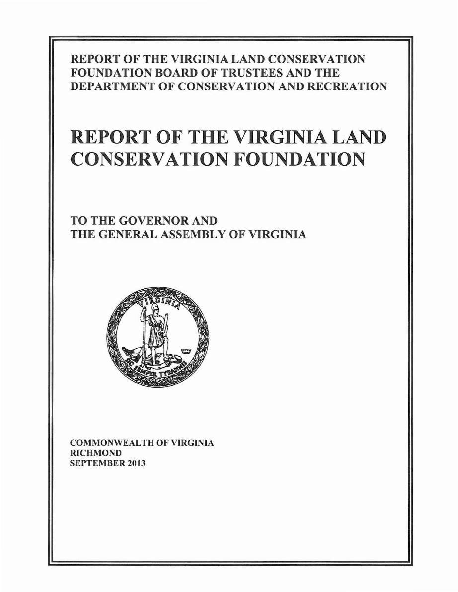
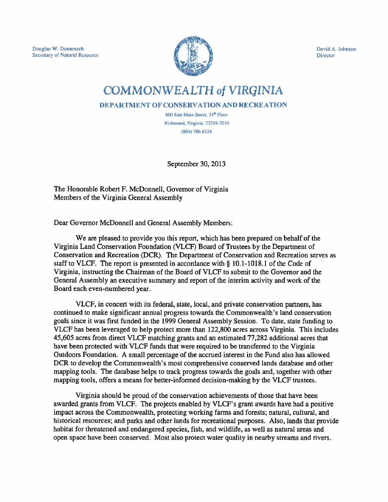

VIRGINIA LAND CONSERVATION FOUNDATION BOARD OF TRUSTEES 2013
Chairman and Secretary of Natural Resources
The Honorable Douglas Domenech, Secretary of Natural Resources
Secretary of Agriculture and Forestry
The Honorable Todd Haymore, Secretary of Agriculture and Forestry
Gubernatorial Appointees
Address
Term Expires
Cong. Dist.
Margaret Davis
Center Cross
06/30/13
1
Vacant
2
Brooks M. Smith
Richmond
06/30/10
3
Robert E. Beals
Midlothian
06/30/14
4
Vacant
5
Anna Lawson
Daleville
06/30/11
6
Herbert L. Dunford, Jr.
Henrico
06/30/14
7
R. Brent Blevins, Jr.
Alexandria
06/30/15
8
Ollie W. Kitchen, Jr.
Covington
06/30/16
9
Robert W. Lazaro, Jr.
Purcellville
06/30/16
10
Robert L. Davenport, Jr.
Manassas
06/30/12
11
Senate Appointees
The Honorable Emmett W. Hanger, Jr. Mt. Solon
06/30/16
The Honorable Jill Holzman Vogel
Winchester
06/30/16
House Appointees
Alexandra Liddy Bourne
Alexandria
06/30/14
(Vice Chairman)
Steven L. Apicella
Stafford
06/30/15
Mary Helen Morgan
Saluda
06/30/16
R. Brian Ball
Richmond
06/30/17
Executive Secretary
David A. Johnson
Director, Department of Conservation and Recreation

PREFACE
This report has been prepared in accordance with and fulfills the requirements of § 10.1-
1018.1 of the Code of Virginia, which instructs the Chairman of the Board of the Virginia Land
Conservation Foundation to submit to the Governor and the General Assembly an executive
summary and report of the interim activity and work of the Board on or before December 15 of
each even-numbered year. “The document shall report on the status of VLCF and its Fund
including, but not limited to, (i) implementation of its strategic plan; (ii) land conservation
targeting tools developed for the Foundation; (iii) descriptions of projects that received funding;
(iv) a description of the geographic distribution of land protected as provided in § 10.1-1021.1;
(v) expenditures from, interest earned by, and financial obligations of the Fund; and (vi) progress
made toward recognized state and regional land conservation goals. The executive summary and
report shall be submitted as provided in the procedures of the Division of Legislative Automated
Systems for the processing of legislative documents and reports and shall be posted on the
General Assembly’s website.”
The following pages will provide a status report for grants awarded by VCLF and an
update on related land conservation activities.

TABLE OF CONTENTS
TRANSMITTAL LETTER
VIRGINIA LAND CONSERVATION FOUNDATION BOARD OF TRUSTEES 2013
PREFACE
TABLE OF CONTENTS
EXECUTIVE SUMMARY ........................................................................................................... i
Virginia Land Conservation Foundation ...................................................................................... i
Table 1: Funding General Summary ....................................................................................... ii
Table 2: Virginia Land Conservation Foundation Grant Award Summary ........................... iii
FOUNDATION OVERVIEW AND ACTIVITIES IN 2009 THROUGH 2012 ...................... 1
Board of Trustees Meetings ......................................................................................................... 1
Interagency Task-Force Meetings ................................................................................................ 1
CONSERVATION PLAN AND TOOL DEVELOPMENT ..................................................... 2
Comprehensive Plan Development .............................................................................................. 2
Virginia’s Natural Heritage Plan ................................................................................................. 4
Strategic Plan Development ....................................................................................................... 10
STATUS OF LAND CONSERVATION IN VIRGINIA ......................................................... 11
Land Conservation Status Summary .......................................................................................... 11
Table 3: Land Preservation Statistics in Virginia (through June 30, 2013) .......................... 11
Table 4: Current Annual Protection Trends as of June 30, 2013 .......................................... 12
Land Preservation Tax Credit Responsibilities.......................................................................... 12
STATUS OF VIRGINIA LAND CONSERVATION FOUNDATION GRANTS ................ 13
Competitive Grant Awards (December 1, 1999 Grant Round) ................................................. 13
Table 5: Competitive Grant Awards (December 1, 1999 Grant Round) .............................. 14
Civil War Battlefield Grant Awards FY 2000-2001 .................................................................. 15
Table 6: FY2000-2001 Civil War Battlefield Grant Awards ................................................ 16
Competitive Grant Awards (January 4, 2001 Grant Round) ..................................................... 16
Table 7: Competitive Grant Awards (January 4, 2001 Grant Round) .................................. 17
Competitive Grant Award Funding FY2001 through FY2003 .................................................. 18
Competitive Grant Awards (June 7, 2005 Grant Round) .......................................................... 19
Table 8: Virginia Land Conservation Foundation: Funding Source and Allocation for June
7, 2005 Grant Awards ........................................................................................................... 20
Table 9: Competitive Grant Awards (June 7, 2005 Grant Round) ....................................... 21

Competitive Grant Awards (December 1, 2005 Grant Round) ................................................. 22
Table 10: Virginia Land Conservation Foundation: Funding Source and Allocation for
December 1, 2005 Grant Awards.......................................................................................... 23
Table 11: Competitive Grant Awards (December 1, 2005 Grant Round) ............................ 24
Competitive Grant Awards (June 13, 2007 Grant Round) ........................................................ 26
Table 12: Virginia Land Conservation Foundation: Funding Source and Allocation for June
13, 2007 Grant Awards ......................................................................................................... 27
Table 13: Competitive Grant Awards (June 13, 2007 Grant Round) ................................... 28
Competitive Grant Awards (January 7, 2009 Grant Round) ..................................................... 29
Table 14: Virginia Land Conservation Foundation: Funding Source and Allocation for
January 7, 2009 Grant Awards.............................................................................................. 33
Table 15: Competitive Grant Awards (January 7, 2009 Grant Round) ................................ 34
Competitive Grant Awards (September 13, 2011 Grant Round) ............................................... 35
Table 16: Virginia Land Conservation Foundation: Funding Source and Allocation for
September 13, 2011 Grant Awards ....................................................................................... 40
Table 17: Competitive Grant Awards (September 13, 2011 Grant Round) ......................... 41
Competitive Grant Awards (December 6, 2012 Grant Round) ................................................. 42
Table 18: Virginia Land Conservation Foundation: Funding Source and Allocation for
December 6, 2012 Grant Awards.......................................................................................... 46
Table 19: Competitive Grant Awards (December 6. 2012 Grant Round) ............................ 47
Virginia Outdoors Foundation ................................................................................................... 48
Table 20: VLCF Funding Allocated to the Virginia Outdoors Foundation .......................... 48
GEOGRAPHICAL DISTRIBUTION ....................................................................................... 49
Table 21: Geographical Distribution of Foundation Grant Awards (By Project) ................. 50
Table 22: Geographical Distribution of Foundation Competitive Grant Awards (By
Funding) ................................................................................................................................ 51
GRANT CRITERIA ................................................................................................................... 52
Table 23: Virginia Land Conservation Foundation: Grant Application Scoring Sheet and
Criteria .................................................................................................................................. 52
Open Space & Parks Category ................................................................................................... 53
Natural Areas Category.............................................................................................................. 54
Historic Area Preservation Category ......................................................................................... 55
Agricultural Lands Category ...................................................................................................... 56
Forest Lands Category ............................................................................................................... 57
Virginia Outdoors Plan (VOP) Identified Need......................................................................... 58

Water Quality Benefit ................................................................................................................ 58
Value Added .............................................................................................................................. 58
Public Access ............................................................................................................................. 58
Ratio of Match to Total Project Cost ......................................................................................... 58

i
EXECUTIVE SUMMARY
The Virginia Land Conservation Foundation (Foundation or VLCF) serves an important
land conservation mission in the Commonwealth. It leverages state funds through matching grants
and partnerships to protect working farms and forests, historic lands, open space and parks, and
natural areas. The Foundation’s distinctive features include a cross-cutting grant review process to
maximize conservation values of funded projects, an inter-agency staff review team that involves
expertise from multiple state agencies, and a final review by a diverse Board of Trustees whose
membership includes appointees from the Governor, Speaker of the House of Delegates, and the
Senate of Virginia.
Virginia Land Conservation Foundation
Since its inception in 1992, VLCF has experienced a name change from the Virginia
Conservation and Recreation Foundation to the Virginia Land Conservation Foundation, a
significant expansion and improvement to its Code authority, and has sustained a successful grants
program. In 2000, the Foundation’s Board of Trustees grew from 9 members to 18 members. In
2006, the Secretary of Agriculture and Forestry also was added to the Board.
Total funds appropriated to the Foundation have exceeded $44.5 million since FY2000
(Table 1). Of this amount, approximately $33.4 million has been allocated to VLCF’s matching
grant program, and more than $9.8 million has been allocated to the Virginia Outdoors Foundation
in accordance with Virginia Code § 10.1-1020(C)(1).
ii
Table 1: Funding General Summary
Fiscal
Year
Source
Amount
Available/
Approp.
Amount to
VOF
Amount
Expended on
or allocated to
Grants
Grant
Date
FY2000
Approp. Act (Chap. 935 – 1999)
1,750,000
0
1,353,399.00
12/01/1999
FY2001
Approp. Act (Chap. 1073 – 2000)
3,400,000
0
3,382,004.92
FY2001
Approp. Act (Chap. 1073 – 2000)
6,200,000
1,550,000
3,730,783.00
01/04/2001
FY2004
Vehicle Reg. (Chap. 1042 – 2003)
1,463,275
365,819
2,629,822.67
06/07/2005
FY2005
Approp. Act (Chap. 4 – 2004)
2,500,000
625,000
FY2005
Unallocated Interest
56,982
14,246
FY2005
Approp. Act (Chap. 951 – 2005)
10,000,000
2,500,000
9,015,182.92
12/01/2005
FY2005
Vehicle Reg. (Chap. 951 – 2005)
381,061
95,265
FY2006
Approp. Act (Chap. 951 – 2005)
2,500,000
625,000
FY2006
Unallocated Interest (thru 06/30/06)
188,960
47,240
5,447,399.00
06/13/2007
FY2006
Vehicle Reg (Chapter 2 – 2006)
783,563
195,890
FY2007
Approp. Act (Chap. 3 – 2006)
2,500,000
625,000
FY2007
Approp. Act (Chap. 847 – 2007)
500,000
125,000
FY2007
Unallocated Interest (thru 06/13/07)
300,000
75,000
FY2008
Approp. Act (Chap. 847 – 2007)
3,000,000
750,000
FY2007
Vehicle Reg. (Chap. 3 – 2006)
663,269
165,817
4,036,136.00
01/07/2009
FY2008
Vehicle Reg. (Chap. 847 – 2007)
397,880
99,468
FY2009
Approp. Act (Chap. 879 – 2008)
2,000,000
500,000
FY2010
Approp. Act (Chap. 872 – 2010)
2,000,000
500,000
FY2010
Vehicle Reg. (Chap. 781 – 2009)
4,666
1,166
2,272,808.00
09/13/2011
FY2011
Approp. Act (Chap. 874 – 2010)
500,000
125,000
FY2012
Approp. Act (Chap. 874 – 2010)
500,000
125,000
FY2012
Approp. Act (Chap. 890 – 2011)
1,000,000
250,000
FY2013
Approp. Act (Chap. 3 – 2012)
1,000,000
250,000
1,569,250.00
12/06/2012
FY2014
Approp. Act (Chap. 806 – 2013)
1,000,000
250,000*
TOTALS
44,589,656
9,859,911
33,436,785.51
NOTE: Italicized numbers are estimated as one or more projects have not been closed out.
NOTE: Unexpended portions from several grant rounds were reverted to the General Fund.
NOTE: Unexpended portions from withdrawn projects or projects that closed at a lesser amount than authorized were
reprogrammed to subsequent grant rounds unless reverted.
NOTE: * - Funds not transferred in full to VOF as of report date
Since first receiving funding in FY2000, the Foundation has held eight grant rounds.
During those eight grant rounds, VLCF received 231 applications requesting approximately $96.2
million in state funding, which was almost three times the available amount (Table 2). To date,
VLCF has awarded funding to 129 of the 231 grant projects, awarded approximately $36.2 million
to land conservation projects, and helped protect more than 45,000 acres at an average cost of $734
per acre.
iii
Table 2: Virginia Land Conservation Foundation Grant Award Summary
Grant
Award
Date
# of
Applic.
Received
Amount
requested from
VLCF
# of
Projects
Awarded
Funds
Amount
Awarded
by VLCF
# of
Projects
Total Amount
that is
obligated
Total
Acres
targeted
Easement
Amount that
is obligated
Acres by
Easement
targeted
Acres
Preserved
as Grant
Match
12/01/99
20
5,800,000.00
12
1,688,842
9
1,353,399.00
1,136.87
384,600.00
532.00
0
Projects Specified in
Appropriations Act
3,400,000.00
4
3,400,000
4
3,382,004.92
1,257.00
0
0
0
01/04/01
41
11,200,000.00
19
3,919,695
18
3,730,783.00
2,764.55 1,164,666.00
1,218.15
0
06/07/05
23
6,011,695.00
12
3,027,665
11
2,629,822.67
6,552.80 1,080,729.00
3,441.00
0
12/01/05
52
30,850,220.50
22
9,717,411
20
9,015,282.92
6,931.02 1,401,200.00
2,271.46
315.53
06/13/07
31
24,847,590.00
15
6,217,843
13
5,447,399.00
10,543.31 2,257,114.00
2,598.80
0
01/07/09
22
5,404,839.00
16
4,310,945
15
4,036,136.00
12,040.52
978,518.00
2,080.00
0
09/13/11
27
5,933,991.00
17
2,404,408
16
2,272,808.00
2,439.36
880,708.00
1,379.57
0
12/06/12
15
2,775,121.00
12
1,569,250
12
1,569,250.00
1,858.43
997,121.00
1,444.21
173.00
TOTAL
231
96,223,456.50
129
36,256,059
118
33,436885.51
45,523.86 9,144,656.00
14,965.19
488.53
NOTE: Italicized numbers are estimated as one or more projects have not been closed out.
iv
The Foundation has also met its charge to develop a strategic plan for the expenditure of
moneys received from the Fund. The strategic plan governing fiscal expenditures has been
incorporated into successive VLCF grant manuals beginning in 1999, and has been updated
regularly. The most recent revisions to the manual were made for the December 6, 2012 grant
round. The grant scoring criteria are outlined in Table 23 and the entire grant manual may be
found at
www.dcr.virginia.gov/virginia_land_conservation_foundation/
.
The Foundation is one of the key tools that Virginia utilizes to attain its land conservation
targets. The Virginia Land Conservation Foundation also serves as a coordinating mechanism for
bringing together a number of state agencies’ land conservation efforts and priorities. A
coordinating agency task force made up of the Director of the Department of Conservation and
Recreation, the Commissioner of Agriculture and Consumer Services, the State Forester, the
Director of the Department of Historic Resources, the Director of the Department of Game and
Inland Fisheries, and the Executive Director of the Virginia Outdoors Foundation, or their
designees, provide the VLCF Board with assistance on such matters as grant criteria, grant
priorities, and grant selection. The Virginia Department of Conservation and Recreation serves as
the lead staff for the Foundation.
The Virginia Department of Conservation and Recreation’s Office of Land Conservation
serves as a statewide central contact, repository, and clearinghouse for land conservation in
Virginia. During VLCF grant rounds, this Office serves as an important source of information for
potential grant applicants and acts as the grant manager for projects funded. The Office’s website
(http://www.dcr.virginia.gov/land_conservation/) includes a wide variety of land conservation
materials and contact information that assists landowners, conservation organizations, and
managers with their conservation planning. In addition, the website provides a link to the state’s
first comprehensive statewide public lands resource mapping tool, which was developed by DCR.
This important land conservation planning tool is regularly updated and is accessible at
http://www.dcr.virginia.gov/land_conservation/tools02a.shtml
.
The Department of Conservation and Recreation also has developed other databases that
assist in the Foundation’s work. For example, the Department’s Natural Heritage “Conservation
Sites Database” is based upon more than 20 years of data collection and is Virginia’s most
comprehensive information management system on rare, threatened, and endangered plants and

v
animals and their natural habitats. DCR also has produced several statewide tools such as the
Conservation Lands Database (which provides a dynamic parcel-level tracking tool for all
conservation lands in the Commonwealth) and the Virginia Conservation Lands Needs Assessment
(which provides statewide models to display lands ranked in conservation importance based on
their recreational, cultural, agricultural, forest economics, and watershed integrity assets). These
tools, as well as others described below, are utilized to help assess grant applications submitted to
the Foundation for funding consideration. Additionally, DCR has developed a Natural Heritage
Plan. This plan identifies key habitats for rare species and significant natural communities that
merit preservation.
The 2007 version of the Virginia Outdoors Plan (VOP, or Outdoors Plan) was expanded to
substantially meet the requirements of the Foundation’s comprehensive plan as required under
§10.1-1021 of the Code of Virginia. The VOP, prepared by DCR every five years, is the state’s
official plan for the protection and conservation of Virginia’s important natural, outdoor
recreational, and open space resources. The 2007 VOP has been nationally recognized for its
content. The Outdoors Plan is based on a complete inventory of all publicly held park and open
space land. This inventory includes state-owned lands and lands held by federal agencies and
localities. This inventory of existing lands and facilities serves as a basis for the needs assessment.
In addition to its analysis of existing conditions statewide, the VOP also provides
recommendations for each of the State’s Planning Districts in meeting outdoor recreation,
conservation, and open space needs. Key areas necessary to protect the Commonwealth’s natural,
scenic, open space, and cultural resources are identified. Currently, work is underway to publish
online the 2013 Virginia Outdoors Plan, which will then serve as VLCF’s comprehensive plan.

1
FOUNDATION OVERVIEW AND ACTIVITIES IN 2009 THROUGH 2012
Board of Trustees Meetings
In 2009 through 2012, the Board of Trustees met as needed to authorize grant rounds,
consider applications, and address land preservation tax credit matters. Meetings of the Board
during this time period were as follows:
January 7, 2009 – Board of Trustees’ Meeting: Consideration of grant project awards and
additional Land Preservation Tax Credit Review Criteria revisions. (Grant round schedule
and FY09 and FY10 expenditure plan approved at August 7, 2008 meeting).
March 27, 2009 – Board of Trustees’ Meeting: Presentation and approval of revised grant
expenditure plan for FY09 and FY10 to address federal stimulus (later switched back to
General Fund support); presentation and approval of changes to Land Preservation Tax
Credit Review Criteria; partner agency updates.
December 4, 2009 – Board of Trustees’ Meeting: Grants status update; presentation and
update on Land Preservation Tax Credit Review; panel discussion on Lessons Learned
From the 400,000-Acre Land Conservation Goal.
2010 – The Board did not meet.
May 3, 2011 – Board of Trustees’ Meeting: Presentation and approval of grant expenditure
plan for FY11 and FY12; presentation and approval of changes to VLCF Grants Manual;
presentation of VLCF stewardship fund distribution procedures; agency updates.
September 13, 2011 – Board of Trustees’ Meeting: Presentation and approval of grant
projects; presentation of VLCF stewardship fund allocations; election of new vice chair;
report on results of land conservation listening sessions; agency updates.
August 20, 2012 – Board of Trustees’ Meeting: Presentation and approval of FY13 and
FY14 grant round schedule and financial plan; approval of proposed changes to VLCF
Grant Manual and scoring criteria; approval of 2012 VLCF stewardship fund distribution.
December 6, 2012 – Board of Trustees’ Meeting: Presentation of grant applications and
approval of grant awards.
Interagency Task-Force Meetings
Grant applications are scored and ranked by an interagency task force comprised of
representatives of the Department of Conservation and Recreation, Department of Agriculture and
Consumer Services, Department of Forestry, Department of Game and Inland Fisheries,

2
Department of Historic Resources, and the Virginia Outdoors Foundation, as required by Virginia
Code § 10.1-1018(E).
In 2008 the task force met three times to review and rank grant applications received
during the August 15, 2008 through October 10, 2008 grant round and to develop grant-award
recommendations for the Board. The grant awards for that round were authorized by the VLCF
Board at their January 7, 2009 meeting. The task force did not meet in 2009 and 2010 because
there were no grant rounds.
In 2011 the task force met twice to review and rank grant applications received during the
May 10, 2011 through July 12, 2011 grant round. The grant awards for that round were authorized
by the VLCF Board at their September 13, 2011 meeting.
In 2012 the task force met twice to review and rank grant applications received during the
August 24, 2012 through October 14, 2012 grant round. The grant awards for that round were
authorized by the VLCF Board at their December 6, 2012 meeting.
CONSERVATION PLAN AND TOOL DEVELOPMENT
Comprehensive Plan Development
Subsection 1 of § 10.1-1021 of the Code of Virginia directs the Virginia Land
Conservation Foundation to prepare a comprehensive plan “that recognizes and seeks to
implement all of the purposes for which the Foundation is created”. In the process of developing
this comprehensive plan, the Code of Virginia directs the Foundation to:
1) Develop a strategic plan for the expenditure of unrestricted moneys;
2) Develop an inventory of those properties in which the Commonwealth holds a legal
interest “for the protection or preservation of ecological, cultural or historical resources, lands for
recreational purposes, state forest lands, and lands for threatened or endangered species, fish and
wildlife habitat, natural areas, agricultural and forestal lands and open space;” and
3) Develop a needs assessment for the future considering the reports and information listed
in Subsection 1c. Subsection 1c specifies that “[i]n developing the needs assessment, the Board of
Trustees shall consider among others the properties identified in the following: (i) Virginia
Outdoors Plan, (ii) Virginia Natural Heritage Plan, (iii) Virginia Institute of Marine Science
Inventory, (iv) Virginia Joint Venture Board of the North American Waterfowl Management Plan,

3
and (v) Virginia Board of Historic Resources Inventory. In addition, the Board shall consider any
information submitted by the Department of Agriculture and Consumer Services on farmland
preservation priorities and any information submitted by the Department of Forestry on forest land
initiatives and inventories.” The Department of Game and Inland Fisheries Wildlife Action Plan
also serves as a resource to the Foundation in identifying lands in need of protection.
The 2007 Virginia Outdoors Plan (VOP) was expanded to substantially meet the
requirements of the Foundation’s comprehensive plan. The VOP is prepared by DCR and updated
every five years and is the state’s official plan for the protection and conservation of Virginia’s
important natural, outdoor recreational and open space resources. The 2007 Plan was recognized
by the National Park Service as one of the top three statewide recreation plans in the nation. The
plan is based on a complete inventory of all publicly held park and open space land, including not
only state-owned lands but also lands held by federal agencies and localities. This inventory of
existing lands and facilities serves as a basis for the needs assessment. The Virginia Outdoors Plan
includes a summary of the Virginia Natural Heritage Plan.
In addition to its analysis of existing conditions statewide, the Virginia Outdoors Plan also
provides recommendations for each of the State’s Planning Districts in meeting outdoor recreation,
conservation, and open space needs. Key areas necessary to protect the Commonwealth’s natural,
scenic, open space, and cultural resources are identified. These recommendations are collected
from a number of sources including all of the involved government agencies, localities, and
through the public-meeting process.
The 2007 Virginia Outdoors Plan identified and expanded on the Foundation’s key land
conservation needs and protection strategies and continues to serve as a sound foundation for
future land conservation activities within the Commonwealth. A newly incorporated chapter on
land conservation covered not only the benefits of, and tools for achieving, land conservation, but
also included recommendations on what types of land should be protected.
The statewide Virginia Outdoors Demand Survey is carried out every five years in
preparation for the next edition of the VOP. The 2011 Survey, like the 2007 Survey, showed
widespread support for using government resources to protect open space. The survey also
showed that many Virginians considered outdoor recreation and access to open space to be
important to their families. The 3,166 responses to the mail survey answered 30 questions and had

4
a two-percent margin of error. The Survey found high regard for the importance of outdoor
recreation opportunities and a strong commitment to the protection of natural areas among the
general public. The Survey also found strong support for public funding and public management of
lands to protect natural areas and make them available for public access. Close to two-thirds of
respondents rate the protection of natural areas as “very important,” with only 1.3 percent of
respondents rated such protection as “not important.” More than two-thirds of respondents
considered the best method of protecting natural areas to be “outright purchase and then
management of a natural area or park for public use.” The vast majority of the remaining
respondents favored “purchase of easements that reduce development rights with some public
use.”
The 2013 edition of the VOP, which represents 50 years of parks and recreation planning in
the Commonwealth, will again integrate land conservation with other outdoor recreation priorities.
Public outreach and comments were a focus during 2012, and the final VOP is scheduled to be
published in the fall of 2013.
Virginia’s Natural Heritage Plan
The Virginia Natural Area Preserves Act (Virginia Code § 10.1-209 et seq.) charges the
Department of Conservation and Recreation with the responsibility of establishing and maintaining
the state’s Natural Heritage Program and developing a Natural Heritage Plan (NHP) to guide the
preservation of habitat for rare plants, animals and significant natural communities. Land
conservation planning is a key component of the Natural Heritage Plan and vital to the effective
conservation of the state’s natural heritage. The most recent version of the plan is from 2003 and
is entitled “Virginia’s Precious Heritage: A Report on the Status of Virginia’s Natural
Communities, Plants and Animals, and a Plan for Preserving Virginia’s Natural Heritage
Resources.” This plan lays out DCR’s approach to identifying and preserving the most significant
habitats across the state. Many aspects of the plan are also integral to the Foundation’s planning
efforts and are detailed in the Virginia Outdoors Plan. DCR’s land conservation planning tools –
the VOP and the NHP – play an important role in land conservation planning by the Land
Conservation Foundation and Virginia’s land conservation community. The information provided
in these planning tools also has significant utility for regional initiatives such as the Chesapeake
Treasured Landscapes and the Captain John Smith Water trail.

5
DCR has worked hard to convert its scientific data in the form of natural community and
rare species mapped location and status data into easily interpreted conservation site boundaries.
Central to the Natural Heritage Plan is the Conservation Sites Database, which is based on nearly
25 years of data collected on the location and viability of Virginia’s natural communities and rare
plants and animals. Conservation sites are mapped boundaries that enclose one or more rare plant
or animal locations or a significant natural community, and the surrounding habitat or buffer
necessary to protect the resource(s). DCR has developed boundaries for more than 2,200 areas
around the state, which collectively constitute approximately 1,653,300 acres of terrestrial, stream-
and karst-associated lands. DCR provides a secure Internet mapping tool, the Natural Heritage
Data Explorer (NHDE), so that these data can be shared with land conservation partners and local
governments for conservation planning and project review efforts. While the NHDE is an
innovative and vastly efficient tool, it is operating on antiquated technology and software
(ArcIMS). An update to this valuable tool is necessary so that it might continue to serve the nearly
200 government agencies, conservation organizations, universities, and private companies that rely
on its use. DCR staff are working hard to keep the community and species level data up-to-date
and reflective of current conditions.
Another key component to the Natural Heritage Plan is maintaining an inventory of lands
already protected in Virginia, not only by DCR but by the many partners in land conservation.
Toward this end, the Department has developed the Conservation Lands Database. This database
addresses §10.1-1021(1)(b) of the Code of Virginia, which directs VLCF to develop an inventory
of those properties in which the Commonwealth holds a legal interest “for the protection or
preservation of ecological, cultural or historical resources, lands for recreational purposes, state
forest lands, and lands for threatened or endangered species, fish and wildlife habitat, natural areas,
agricultural and forestal lands and open space”. The Conservation Lands Database, the
Commonwealth’s first comprehensive, geospatial dataset for Virginia’s protected lands, is
maintained and continually updated by DCR. In addition to local, state and national parks, this
database includes parcel-level boundaries and attributes for protected lands in Virginia that have
potential significance for serving a variety of conservation, recreation, and open-space purposes.
The database continues to grow in size, to be made more accurate, and to be enhanced through the
addition of information related to management intent, legal protection status, dates of initial
conservation action, and boundary refinements for all lands. New parcels are constantly
incorporated into the Conservation Lands Database, through regular data sharing between DCR
and other state agencies, localities, land trusts, and other conservation organizations.
6
The Conservation Lands Database is available to others outside of DCR. The public may
view maps of information contained in the database through DCR’s Land Conservation Data
Explorer (LCDE) website at
www.vaconservedlands.org
. This interactive mapping site (ArcIMS)
allows users to view, query and explore conservation lands data in the context of several base
layers (i.e. aerial photography, hydrologic data, jurisdictional boundaries, etc.) and alongside other
geospatial summaries of natural and cultural resource features (the Virginia Conservation Lands
Needs Assessment). While data cannot be downloaded from LCDE, data and background
information on the Conservation Lands database is available at
http://www.dcr.virginia.gov/land_conservation/tools02a.shtml
, where GIS shapefiles can be
downloaded for use in any GIS. In order to protect landowner privacy, this access does not
include spatial or tabular information regarding private conservation easements. Outside parties
can only obtain this information by contacting DCR’s Division of Natural Heritage.
In the past four years, Virginia Natural Heritage has been intimately involved in both the
PAD-US (Protected Areas Dataset for the United States) and NCED (National Conservation
Easements Database), two national efforts to map protected lands. The PAD-US manages national
public lands data, while the NCED concentrates on private conservation easements. Virginia
Natural Heritage is considered the state’s data aggregator for both efforts, and has developed
streamlined ways to efficiently share current public lands and easement data in the specific formats
requested by PAD-US and NCED. For each effort Natural Heritage has assisted with database
design and workflow for data transfers, and provided statewide tract-level GIS data with key
attributes including acreage, protection dates, managing entity, owner type, and in the case of
easements, the easement holder(s). Virginia’s Natural Heritage Program staff were invited to
assist with the design of the NCED, based on the relative abundance of easements in Virginia, a
focus on managing easement data, a comprehensive statewide database structure, and on their
knowledge of the challenges of managing these unique data. As the data aggregator for Virginia,
Natural Heritage is the hub through which all Land Trusts may contribute their data to these
national efforts.
DCR’s Natural Heritage Program also maintains the Virginia Conservation Lands Needs
Assessment (VLCNA), a suite of seven statewide GIS models: Ecological, Cultural, Recreational,
Forest Economics, Agricultural, Watershed Integrity and Vulnerability (a.k.a. Threat of
Development). VLCF provided funding for the development of these strategic conservation tools,

7
which can be viewed on NHDE and LCDE websites. These models provide spatial data
summaries to guide state government agencies, localities, and non-profit groups that seek
comprehensive ways to prioritize land use and conservation. Besides common day-to-day queries
and GIS analyses by various conservation partners, these models have been used by many state
and local governments, Planning District Commissions, and conservation organizations, to provide
explicit, quantitative guidance in the development of Green Infrastructure plans, strategic
conservation plans, and in the revisions of comprehensive plans.
The following is a brief description of the available GIS models that make up the VCLNA:
1. The Ecological Model is a collection of models and products including the Virginia
Natural Landscape Assessment (VaNLA), DGIF’s Wildlife Action Plan, and the
Virginia Biodiversity Assessment, using species and natural community information
from DCR’s Natural Heritage Program. The VaNLA is a landscape-scale GIS analysis
for identifying, prioritizing, and linking natural habitats in Virginia. It identifies and
connects the most important natural, unfragmented lands based on considerations of
biological and ecological value and integrity.
2. The Cultural Model is a statewide model showing the cultural value of lands in
Virginia. The Division of Natural Heritage worked closely with the Virginia
Department of Historic Resources to identify and prioritize important cultural assets in
Virginia, including archaeological and architectural sites and American Indian Areas.
3. The Recreational Model is a GIS effort to map the value of lands as they contribute to
recreational opportunity. The Division worked closely with the Virginia Department of
Game and Inland Fisheries, DCR’s Division of Planning and Recreation, and numerous
other collaborators and data contributors to analyze a variety of recreational datasets
(including but not limited to hunting, fishing, wildlife watching, parks, trails,
population density influences and public access) in an effort to model recreational value
statewide.
4. The Forest Economics Model is a GIS effort to map viable forestland with economic
value. The Division worked closely with the Virginia Department of Forestry to
analyze biophysical parameters, management constraints, and socioeconomic
influences.
5. The Agricultural Model provides a statewide map of important agricultural lands,
developed in cooperation with the Department of Agriculture and Consumer Services
and the Virginia Department of Historic Resources. This model analyzed parameters

8
such as soils, slope, land use, and historic farms.
6. The Watershed Integrity Model maps the relative value of land as it contributes to
water quality and watershed integrity. The Division worked closely with the Virginia
Department of Forestry and Virginia Commonwealth University Center for
Environmental Studies to analyze a variety of parameters focused on identifying
important terrestrial features that contribute to water resources, and, therefore
watershed integrity.
7. The Vulnerability Model (or growth prediction model) consists of four statewide
models showing predicted growth patterns across the landscape. The model uses GIS
and statistical methods to analyze housing allocation, lot size estimation, growth
hotspot, residential land conversion hotspots, and travel time proximity to model urban,
suburban (urban fringe), and rural (outside the urban fringe) growth patterns. Four
summary models are complete and available: an Urban Growth Prediction Model, a
Sub-Urban Model, a Rural Model, and a Composite Model, where the latter
summarizes the former three.
DCR is seeking support to revise, advance, and enhance the VCLNA models in the coming
years, as new data and imagery are anticipated. The VCLNA models need to be updated with
emerging base datasets (e.g., National Landcover Dataset) so that they may retain their value as
statewide conservation planning tools.
DCR’s Division of Natural Heritage continues to support implementation products that
provide the VCLNA to localities and land trusts for specific uses to prioritize their conservation
efforts. This implementation effort began with a survey of hundreds of conservation partners in
Virginia, to assess what components of the VCLNA are most valuable to them, and to determine
the most efficient means of sharing these data. Natural Heritage delivers VCLNA “packages” to
conservation partners, in formats and geographic extents that are targeted at their needs. This
implementation includes tutorials and ongoing follow-up support to help guide the local uses of
these tools.
Along with the Conservation Sites Database and the Conservation Lands Database, the
VCLNA is utilized to assess grant projects submitted to the Foundation for funding consideration.
Pertinent Natural Heritage Plan layers are used in scoring potential lands in all VLCF interest
areas, alongside other criteria. Furthermore, the Virginia Outdoors Foundation relies on the

9
VCLNA, particularly the VaNLA, to screen potential conservation easement lands.
DCR continues to integrate the VCLNA models with other geospatial datasets to extend
their use and to meet the varied needs of the growing body of DCR conservation partners.
Recently, the VaNLA and the Conservation Sites dataset provided critical components of the
DEQ-funded Priority Conservation Areas (PCA) analysis, a partnership between, Natural Heritage,
DGIF, Virginia Commonwealth University (VCU) - Center for Environmental Studies and the
Virginia Institute for Marine Sciences (VIMS). In its second revision currently, the PCA
integrates data from these partners to summarize Green Infrastructure (the VaNLA and the
Conservation Sites dataset from Natural Heritage), inland Blue Infrastructure (Healthy Waters
stream reaches identified via analyses of the VCU InStar database of aquatic biological
communities), Priority Marine and Estuarine Resource areas (VIMS), and Priority Wildlife
Diversity Conservation Areas (selected Wildlife Action Plan data from DGIF). The output GIS
summary map scores all lands in the Virginia Coastal Zone based on their additive values across
these input data, for use in strategic conservation planning efforts throughout the Virginia Coastal
Zone. The revised PCA will also provide the basis for land acquisition decisions made by Virginia
DEQ’s section of the nationally funded Coastal and Estuarine Land Conservation Program
(CELCP).
The Natural Heritage Plan and the assemblage of conservation information and tools
developed by DCR’s Natural Heritage Program greatly assist VLCF with strategic planning.
These tools should continue to be developed and updated to enable thorough evaluations of
Foundation proposals, planning of future natural area conservation needs, and fulfillment of
information requests from land planners and managers at the local, state, and federal levels.
10
Strategic Plan Development
Section 10.1-1021(1)(a) of the Code of Virginia directs the Virginia Land Conservation
Foundation to “[d]evelop a strategic plan for the expenditure of unrestricted moneys received from
the Fund”. The current strategic plan is embodied in the grant program guidelines approved by the
VLCF Board most recently on August 20, 2012 and may be found at
www.dcr.virginia.gov/virginia_land_conservation_foundation/
. This document clearly addresses
how the unrestricted moneys are to be expended through grants and delineates what categories the
funding is to be used for, who is eligible, what the match requirements are, and what evaluation
criteria are to be used to judge the applications.
These revised grant criteria guided the review of applications received during the August
24, 2012 through October 14, 2012 grant round that was considered by the Board at their
December 6, 2012 meeting. As in the past, all of the technical information collected from these
grant applicants was evaluated by an interagency task force.
The interagency task force is comprised of representatives of the Department of
Conservation and Recreation, the Department of Agriculture and Consumer Services, the
Department of Forestry, the Department of Historic Resources, the Department of Game and
Inland Fisheries, and the Virginia Outdoors Foundation. Through this rigorous multi-agency
review and scoring process, only those proposals that best serve the purposes of the Foundation
and that made the best fiscal sense are recommended to the Virginia Land Conservation
Foundation Board of Trustees.
The Foundation also has made significant progress on development of a state-of-the-art
land conservation information system and decision support tool, with the completion of the
Conservation Lands and Conservation Sites Databases and Internet Portals, and the continued
development of the Virginia Conservation Lands Needs Assessment Decision Support Tool.
These products have assisted the Foundation in ranking and selecting priority land preservation
projects.
11
STATUS OF LAND CONSERVATION IN VIRGINIA
Land Conservation Status Summary
The Conservation Lands Database reports that as of June 30, 2013, a total of 3,841,508.50
acres across Virginia have been preserved by federal, state, and local governments and private
conservation organizations (Table 3). This indicates that about 15.2 percent of the
Commonwealth’s total land is currently permanently protected. In Virginia’s portion of the
Chesapeake Bay Watershed, a total of 2,727,182.61 acres of land, or about 19.72 percent, has been
protected. (Approximately 60 percent of Virginia geographically lies in the Bay watershed.)
Table 3: Land Preservation Statistics in Virginia (through June 30, 2013)
Group Holding the
Property or Easement
Amount of
Land
preserved
Statewide
(Acres)
Percentage
Represented
by Holdings
Amount of Land
preserved in
Virginia’s portion
of the Chesapeake
Bay Watershed
(Acres)
Percentage
Represented
by Holdings
Amount of Land
preserved in
Virginia’s Non-
Bay portion
(Acres)
Percentage
Represented
by Holdings
Federal
2,341,481.18
60.95%
1,673,072.19
61.35%
668,408.99
59.98%
State
1,139,428.96
29.66%
820,185.37
30.07%
319,243.60
28.65%
Local
143,517.42
3.74%
125,753.61
4.61%
17,763.81
1.59%
Private/Non-profit
217,080.94
5.65%
108,171.45
3.97%
108,909.49
9.77%
Total Protected
3,841,508.50
100.00%
2,727,182.61
100.00%
1,114,325.89
100.00%
Total Acreage
25,270,000
13,831,890
11,438,110
Percent Protected
15.20%
19.72%
9.74%
Since tracking began in 2000, the number of acres protected each year through easements
and fee simple acquisition has varied greatly (Table 4). In that time, approximately 845,009.59
acres have been preserved overall, with a yearly average of 65,000.74 acres. More than 70 percent
of the preserved acres over that period of time are in the Chesapeake Bay watershed.
12
Table 4: Current Annual Protection Trends as of June 30, 2013
Fiscal Year
Statewide (acreage) Bay (acreage)
Non-Bay (acreage)
2001
43,142.82
29,755.87
13,386.95
2002
50,534.52
36,567.11
13,967.41
2003
48,195.54
39,714.31
8,481.23
2004
39,560.83
30,790.04
8,770.78
2005
69,536.53
44,184.72
25,351.81
2006
70,757.88
55,547.63
15,210.25
2007
97,984.66
73,312.31
24,672.35
2008
94,035.21
60,558.10
33,477.11
2009
90,159.30
62,182.72
27,976.58
2010
106,857.32
79,984.85
26,872.47
2011
34,289.15
21,645.43
12,643.72
2012
55,124.97
35,960.41
19,164.56
2013
44,830.86
24,468.80
20,362.06
Total
845,009.59
594,672.30
250,337.28
Average annual
acreage protected
65,000.74
45,744.02
19,256.71
Land Preservation Tax Credit Responsibilities
Beginning January 1, 2007, the Department of Conservation and Recreation became
responsible for verifying the conservation value of donated land or conservation easements or
other less-than-fee interests in land that result in tax-credit applications for $1 million or more.
The Department’s recommendations are forwarded to the Department of Taxation. Annual reports
summarizing the conservation value of all tax credits claimed during 2009, 2010, 2011, and 2012
are published separately from this report and may be found at:
http://www.dcr.virginia.gov/land_conservation/lpc.shtml
.
13
STATUS OF VIRGINIA LAND CONSERVATION FOUNDATION GRANTS
Additional information on the grant rounds from 1999 through 2007 can be found in prior
VLCF reports, available at
http://lis.virginia.gov/lis.htm
.
Competitive Grant Awards (December 1, 1999 Grant Round)
In FY1999-2000, the VLCF received an appropriation of $1.75 million from the Water
Quality Improvement Fund in accordance with Chapter 935 of the 1999 Acts of Assembly. The
Foundation Board made grants from the $1.75 million appropriation on December 1, 1999.
Twenty applications totaling $5.8 million were received. The Foundation awarded $1,688,842 in
competitive grant funds to 11 projects to conserve 1,267 acres and earmarked funds for a 12
th
project, The Big Survey (Table 5). Of the FY1999-2000 grants awarded, the Foundation actually
paid $1,323,969 in competitive grant funds to 8 projects conserving 1,136.87 acres. All grants
from this grant round have now been closed. In addition to the 8 grant projects that were
completed, $29,430 was awarded to the Department of Game and Inland Fisheries project to
reimburse them for expenses associated with the purchase of The Big Survey. Three projects
originally awarded funds were withdrawn and funds were reverted to the General Fund ($313,255)
during FY03 budget reductions. From the balance of remaining funds from this appropriation,
$22,188 was carried forward to the FY05 grant round, thus zeroing out any remaining balances.
14
Table 5: Competitive Grant Awards (December 1, 1999 Grant Round)
Project Title
Cong.
District
Grant Award
(Dollars)
Estimated
Acres
Project Closing Date
Final Payment
(Dollars)
Final Acres
Open Space
McAfee Knob Carter Land
6
43,800
72
09-2000
43,800
72.00
Powhatan Creek Program
1
250,000
48
WITHDRAWN
250,000 Reverted to
GF – budget reduction
Indian River Park Acquisition
4
100,000
108
06-2001
100,000
90.00
Natural Areas
Powers Tract, NW River Watershed
4
286,000
187
05-2003
286,000
172.27
Hickory Hollow Nature Trail
1
150,012
225
07-2000
150,012
254.00
Cultural and Historic
Fort Christanna Preservation Project
5
50,975
34
WITHDRAWN
50,000 Reverted to GF
– budget reduction
Purchase of the Embrey Farm
1
225,000
30
01-2001
225,000
11.60
*Talbot Farm Cons. Easement
10
76,350
25
01-2001
76,350
25.00
Palmyra Lock & Mill Site
5
6,200
5
03-2002
5,557
5.00
James River Kanawha Canal Park
Expansion
6
13,255
3
WITHDRAWN
13,255 Reverted to GF
– budget reduction
*Welbourne Farm Easement
10
50,000
530
02-2001
50,000
507.00
Agricultural and Forestal
*Welbourne Farm Easement
10
258,250
above
02-2001
258,250
Above
Indian River Park Acquisition
4
100,000
above
06-2001
100,000
Above
Hickory Hollow Nature Trail
1
29,000
above
07-2000
29,000
above
Project Expense Subtotal
1,267
1,323,969
1,136.87
The Big Survey
9
50,000
08-2003
29,430
Totals
$1,688,842
1,353,399
* Denotes Acquisition By Easement

15
Civil War Battlefield Grant Awards FY 2000-2001
Chapter 1073 of the 2000 Virginia Acts of Assembly, § 1-104. Department of Conservation
and Recreation (199), Item 410, Note J1, Page 329 noted that “[o]ut of the amount for Preservation
of Open-Space Lands $3,400,000 the first year from the general fund shall be transferred to the
Virginia Land Conservation Fund (§ 10.1-1020, Code of Virginia). From this deposit, the Virginia
Land Conservation Foundation shall make grants to private non-profit organizations as a match for
federal Land and Water Conservation Fund monies for acquisitions at four threatened Civil War
battlefields. From the deposit to the Virginia Land Conservation Fund, $2,100,000 is for
acquisitions at the Brandy Station battlefield, $250,000 is for acquisitions at the Cedar Creek
battlefield, $350,000 is for acquisitions at the Kernstown battlefield, and $700,000 is for
acquisitions at the Third Winchester (Opequon) battlefield. The Department of Historic Resources
shall work in conjunction with the Virginia Land Conservation Foundation and private nonprofit
organizations in securing the acquisition of the battlefields.”
A total of $3,382,004
dollars from the Virginia Land Conservation Foundation was used to
make grants to private non-profit organizations as a match for Land and Water Conservation Fund
monies (with $17,996 unexpended) (Table 6). The Land and Water Conservation Fund Grants
under the American Battlefield Protection Program for Civil War Battlefield Land Acquisition,
awarded by the National Park Service, were for land acquisition of threatened Civil War
Battlefields. The Virginia funds were used as a portion of the required match for the acquisition of
four threatened Civil War Battlefields, Brandy Station (570 acres), Cedar Creek (150 acres),
Kernstown (315 acres), and Third Winchester Battlefield (222 acres). In summary, 1,257 acres of
battlefield were preserved through the expenditure of $3,382,004.92. The unobligated amount
($17,996) was reverted to the General Fund in FY01.
16
Table 6: FY2000-2001 Civil War Battlefield Grant Awards
Battlefield Projects
Project Title
Grant Award
(Dollars)
Acres
Project
Closing Date
Final Payment
(Dollars)
Final Acres
Brandy Station
2,100,000
570
12-2000
2,100,000.00
570
Third Winchester
700,000
222
08-2000
700,000.00
222
Kernstown
350,000
315
09-2000
350,000.00
315
Cedar Creek
250,000
150
10-2000
232,004.92
150
Totals
$3,400,000
1,257
3,382,004.92
1,257
Competitive Grant Awards (January 4, 2001 Grant Round)
In FY2000-2001, the VLCF received an additional appropriation of $9,600,000 in
accordance with Chapter 1073 of the 2000 Virginia Acts of Assembly. From this appropriation,
$3,400,000 was designated for Civil War Battlefield acquisitions (see previous section) and
$1,550,000 was designated to the Open Space Preservation Trust Fund. This left $4,650,000 in
FY2000-2001 appropriation for grant awards. Combined with the $61,158 FY1999-2000 carry-
forward, $4,711,158 of funds were available for grant awards. On January 4, 2001, the
Foundation’s Board of Trustees considered 41 applications totaling $11.2 million in requested
funds. With the help of the Interagency Task Force, the Foundation Board reviewed the grant
applications and awarded 19 grants for a total of $3,919,695 for 3,302 acres (Table 7). All of
these grant projects have now been closed out. In total, $3,730,783 was expended on 18 grants
that protected 2,764.55 acres. One project, Garden Creek was withdrawn and the funds from this
appropriation, $155,000 was carried forward to the January 2009 grant round. Other funds
remaining after project closure were allocated as follows: Waid Recreation Area ($32,858) to the
June 2005 grant round; and The Meadow ($1,054) to the June 2007 grant round. Additionally, out
of the $4,711,158 available for grants, $791,463 remained unobligated. Additionally, from the
$3,400,000 available for Civil War Battlefield acquisitions, $17,996 remained unobligated. Of the
unobligated amounts ($791,463 and $17,996), $791,464 reverted to the General Fund in FY01
leaving an unobligated balance of $17,995. The Foundation approved the reallocation of the
$17,995 to the June 2005 grant round.
17
Table 7: Competitive Grant Awards (January 4, 2001 Grant Round)
Project Title
Cong. District Grant Award
(Dollars)
Estimated
Acres
Project Closing
Date
Final Payment
(Dollars)
Final Project
Acres
Final Match
Acres
Open Space
Waid Recreation Area
5
126,255
134
10-2003
93,397
134.00
0
Mary B. Stratton Estate
7
75,000
154
06-2006
75,000
167.00
0
Whitt- Riverbend Park
9
110,000
28
09-2001
110,000
28.00
0
*Fairfax Cross County Trail
10**
30,000
3
01-2006
30,000
0.55
0
Keister Park
6
306,575
151
09-2002
306,575
151.00
0
Jamison’s Cove Marina
1
245,955
2
05-2001
245,955
2.00
0
Williams Wharf
1
36,300
1
12-2004
36,300
0.40
0
*Yorktown Beach Trail
1
117,500
2
04-2004
117,500
1.60
0
Natural Areas
Garden Creek
1
155,000
623
WITHDRAWN
0
0
0
Clinch River
9
196,640
458
04-2002
196,640
458.00
0
Oak Hickory Forest
10
729,250
180
02-2004
729,250
226.00
0
Cultural and Historic
*North Meadow/ Carr Property
10
187,042
125
06-2002
187,042
125.00
0
Chancellorsville Battlefield
1
150,000
11
11-2001
150,000
11.00
0
Buhrman (Malvern Hill)
3
300,000
245
04-2001
300,000
245.00
0
Totopotomoy Battlefield
7
323,000
124
03-2001
323,000
124.00
0
Agricultural and Forestal
*Brush Creek Farm
9
72,747
94
05-2001
72,747
94.00
0
*Elgin Dairy Farm
10
317,000
314
08-2001
317,000
314.00
0
*The Meadow
1
359,625
535
11-2004
358,571
535.00
0
*Leonard Farm
9
81,806
118
04-2002
81,806
148.00
0
Totals
$3,919,695
3,302
$3,730,783
2,764.55
0
•
Denotes Acquisition by Easement *
•
Originally this project contained 3 easements in Congressional District 10 and one in 11; project modified to be one parcel in Congressional District 10
**

18
Competitive Grant Award Funding FY2001 through FY2003
In FY2001-2002, per Chapter 1073 of the 2000 Acts of Assembly, the VLCF was
appropriated $6,200,000. The General Assembly adjourned from the 2001 regular session without
enacting a budget bill amending the 2000 Appropriation Act (Chapter 1073 of the 2000 Acts of
Assembly). Therefore, the 2000 Appropriation Act remained the appropriations law of Virginia
for the 2000-2002 biennium. In order to prevent a potential deficit, the Governor invoked his
Constitutional duty and issued Executive Order 74 (01), Balanced Budget Implementation Plan,
2000-02 Biennium on Saturday, February 24, 2001. The Governor directed the Department of
Planning and Budget (DPB) to withhold general fund allotments “to the extent necessary to
prevent any expenditures in excess of the estimated general fund revenue, and in an amount not to
exceed 15 percent of the annual total general fund appropriation of each state agency, department
and institution and other nonstate agencies and institutions listed in the Act for each year of the
2000-02 biennium”. Per this authority, the $6,200,000 for VLCF in FY2001-2002 was unallotted.
This action was documented in Chapter 814 (caboose bill) of the 2002 Virginia Acts of Assembly.
No funds were appropriated to or received by the VLCF in FY2002-2003 (Chapter 899 of
the 2002 Virginia Acts of Assembly and Chapter 1042 of the 2003 Virginia Acts of Assembly).
19
Competitive Grant Awards (June 7, 2005 Grant Round)
During the 2004 Session, Item H2, Chapter 4 of the 2004 Virginia Acts of Assembly,
Special Session I, provided $2,500,000 the first year (FY05) and $2,500,000 the second year
(FY06) from the general fund to be deposited into the Virginia Land Conservation Fund. In
addition to this funding, pursuant to Item K, Chapter 1042 of the 2003 Virginia Acts of Assembly
and Item J, Chapter 4 of the 2004 Virginia Acts of Assembly, Special Session I, $1,463,275 from
vehicle registration fees was deposited at the end of FY04. Based on the funds available to the
Foundation in FY05, the Board approved $3,088,303 to be allocated to the June 2005 grant round
(Table 8). On June 7, 2005, the Foundation’s Board of Trustees considered 23 applications
totaling over $6 million in requested funds. With the help of the Interagency Task Force, the
Foundation Board reviewed the grant applications and awarded 12 grants for a total of $3,027,665
for 6,587 acres ($60,638 left unallocated and not awarded). All of these grant projects have now
been closed out (Table 9). In total, $2,629,822.67 was expended on 11 grants that protected
6,552.80 acres. One project, Cedar Creek Bluff was withdrawn and the funds from this
appropriation, $244,793.50 were carried forward to the January 2009 grant round. Funds
remaining after project closure were allocated to later grant rounds as follows: Gilvary Forest
($12,528) to June 2007; Brandy Station ($75,714.83) to June 2007; Black Farms ($7,756) to June
2007, and Port Tobacco ($57,050) to September 2011. Unallocated funds in the amount of
$60,638 were allocated to the December 2005 grant round.
20
Table 8: Virginia Land Conservation Foundation: Funding Source and Allocation for June
7, 2005 Grant Awards
Funding
Categories
Unallocated
Principal
Balance
Proposed
Return of
Unspent
Grant
Interest
FY04 Vehicle
Registration
Chapter 4
Appropriation Act
TOTAL
VOF
14,246
365,819
625,000
1,005,065
Open Space and
Parks
17,995
32,858
10,684
274,364
468,750
804,668.50*
Natural Area
Protection
0
10,684
274,364
468,750
753,815.50*
Historic Area
Preservation
1,618
10,684
274,364
468,750
755,433.50*
Farmland and
Forest
Preservation
20,570
10,684
274,364
468,750
774,385.50*
Proposed Admin.
Expenses FY05
136,300
136,300
Proposed Admin.
Expenses FY06
140,000
140,000
TOTAL
40,183
32,858
333,282
1,463,275
2,500,000
4,369,668**
Amounts Reserved
for Easement
Projects (33% of
the 4 use areas)
362,160
618,750
Amounts reserved for Grant Program =
$3,070,303
* - Includes an additional $17.50 from a $70 donation
** - does not reflect FY05 interest or payments
Open Space and Parks
[FY01 $17,995 Battlefield Earmarks – Cedar Creek; FY00 (January
2001) $32,858 Waid Recreation Area]
Natural Area Protection
Historic Area Preservation
1,618
[FY00 (December 1999) $975 Fort Christanna Preservation Project;
FY00 (December 1999) $643 Palmyra Lock + Mill Site]
Farmland and Forest
Preservation
20,570
[FY00 (December 1999) $20,570 Big Survey]
21
Table 9: Competitive Grant Awards (June 7, 2005 Grant Round)
Project Title
Cong. District Grant Award
(Dollars)
Estimated
Acres
Project Closing
Date
Final Payment
(Dollars)
Final Project
Acres
Final Match
Acres
Open Space
*Cedar Creek Bluff
6
244,793.50
117
WITHDRAWN
0
0
0
*Mount Pleasant Farm
6
100,000.00
106
07-2006
100,000.00
106.80
0
Fray Tract
7
190,500.00
550
08-2006
190,500.00
624.00
0
Fairview Park Acquisition
6
250,000.00
23
03-2006
250,000.00
23.00
0
Trevilian Station – Riveroak
7
19,375.00
938
02-2006
19,375.00
938.00
0
Natural Areas
Marks and Jacks Islands
2
500,000.00
2,000
08-2005
500,000.00
2,000.00
0
*Gilvary Forest
9
224,130.00
225
08-2006
211,602.00
233.00
0
Historic Resources
Fishers Hill
6
212,408.50
25
12-2007
212,408.50
25.00
0
Brandy Station
7
362,400.00
19
12-2005
286,685.17
19.00
0
Trevilian Station – Riveroak
7
180,625.00 See above
02-2006
180,625.00
See above
See above
Agricultural and Forestal
*Port Tobacco
1
258,000.00
1,803
08-2008
200,950.00
1,803.00
0
*Black Farms Property
2
400,000.00
222
12-2006
392,244.00
222.00
0
*Page Project (PDR)
5
85,433.00
559
08-2006
85,433.00
559.00
0
Totals
$3,027,665.00
6,587
$2,629,822.67
6,552.80
0
* Denotes Acquisition by Easement
22
Competitive Grant Awards (December 1, 2005 Grant Round)
During the 2005 General Assembly Session, FY05 funding resulted in an appropriation of
$10 million to the Foundation in accordance with Chapter 951 of the 2005 Virginia Acts of
Assembly. As the monies available for the June 2005 grant round had already been announced,
the new monies were combined with FY06 funds for a total of $9,721,434 available for a
December 2005 grant round (Table 10). On December 1, 2005, the Foundation’s Board of
Trustees considered 52 applications totaling over $30.8 million in requested funds. With the help
of the Interagency Task Force, the Foundation Board reviewed the grant applications and awarded
22 grants for a total of $9,717,411 for 7,822 acres. All of these grant projects have now been
closed out (Table 11). In total, $9,015,182.92 was expended on 20 grants that protected 6,931.02
acres. Subsequent to the award, the Oaken Brow project was withdrawn. The $600,000 allocated
to the project was approved by the Foundation to be advanced to the June 2007 grant round as
were the unallocated amounts of $3,824 and $199. Additionally, funds from the withdrawal of the
Clinch/Pinnacle project for $62,375 were also advanced to the June 2007 grant round. Remaining
balances from the Brumley project ($1), the Kelly’s Ford Battlefield Overlook Park project
($6,685), and the Portobago Creek project ($11) were authorized for advancement to the January
2009 grant round.
Chapter 951 of the Virginia Acts of Assembly also reduced the amount of money available
to the Foundation from the vehicle registration fees as the monies allocated ahead of these funds
for other activities was increased from $5 million to $6 million with the remaining balance
generated going to VLCF.
23
Table 10: Virginia Land Conservation Foundation: Funding Source and Allocation for
December 1, 2005 Grant Awards
Funding
Categories
Interest
Unallocated
Principal
From June 05
Grant Round
FY05
Vehicle
Registration
Chapter 951
Appropriation Act
Chapter 951
Appropriation Act
TOTAL
VOF
0
0
95,265
2,500,000
625,000
3,220,265.00
Open Space and
Parks
0
0
71,449
1,875,000
468,750
2,415,199.00
Natural Area
Protection
0
29,685.50
71,449
1,875,000
468,750
2,444,884.50
Historic Area
Preservation
0
0
71,449
1,875,000
468,750
2,415,199.00
Farmland and
Forest
Preservation
0
30,952.50
71,449
1,875,000
468,750
2,446,151.50
Admin. Expenses
FY07 proposed
198,700
0
0
0
0
198,700
Admin. Expenses
FY08 proposed
182,000
0
0
0
0
182,000
TOTAL
380,700
60,638.00
381,061
10,000,000
2,500,000
13,322,399.00
Amounts reserved for Grant Program =
$9,721,434
Amounts Reserved
for Easement
Projects (33% of
the 4 use areas of
the new monies)
94,312
2,475,000
618,750
3,188,062.00
Open Space and Parks
Natural Area Protection
29,685.50
[Money not allocated to projects in FY05 (June 2005) grant round]
Historic Area Preservation
Farmland and Forest
Preservation
30,952.50
[Money not allocated to projects in FY05 (June 2005) grant round]
24
Table 11: Competitive Grant Awards (December 1, 2005 Grant Round)
Project Title
Cong.
District
Grant
Award
(Dollars)
Estimated
Acres
Project Closing
Date
Final
Payment
(Dollars)
Final Project
Acres
Final Match
Acres
Open Space
Jamestown Campground & Yacht Basin
1
750,000.00
112.00
02-2007
750,000.00
104.50
0
Rappahannock Station Park
1
200,000.00
26.00
03-2009
200,000.00
26.00
0
Altavista/English Area Park Project
5
75,000.00
146.39
06-2009
75,000.00
146.39
0
Paradise Creek Eco-Park
4
500,000.00
18.50
12-2006
500,000.00
24.00
16.60
Chincoteague Open Space Acquisition Project
2
500,000.00
77.00
08-2006
500,000.00
77.00
47.93
Tobacco Heritage Trail Phase II Land
Acquisition
5
386,375.00
240.00
12-2009
386,375.00
607.00
0
Historic Resources
Huntsberry Farm Project
10
1,000,000.00
247.00
08-2009
1,000,000.00
247.00
0
*Hutchinson Farm/South Lot Project
10
135,000.00
25.00
07-2007
135,000.00
25.00
0
Lick Run Civil War Battlefield
1
500,000.00
134.00
12-2006
500,000.00
134.00
0
Kelly’s Ford Battlefield Overlook Park
7
75,000.00
8.00
05-2007
68,315.00
8.00
0
Kippax Plantation
4
205,000.00
9.27
11-2006
205,000.00
9.27
0
*Four Mile Tree
3
500,000.00
306.00
06-2007
500,000.00
306.00
0
Agricultural and Forestal
*George Property
1
213,500.00
274.46
07-2007
213,500.00
274.46
0
*Oaken Brow Conservation Easement
2
600,000.00
589.00
WITHDRAWN
0
0
0
*Meadow Grove Property
7
300,000.00
300.00
06-2006
300,000.00
346.00
0
Dragon Run Conservation Corridor Initiative
1
194,000.00
164.00
02-2007
194,000.00
165.60
251.00
25
Brumley Mountain
9
885,941.00
880.00
04-2008
885,941.00
880.00
0
*Portobago Creek Easement
1
252,710.50
1320.00
01-2007
252,700.00
1,320.00
0
Natural Areas
Cedars/Fletcher Ford
9
68,450.00
81.00
11-2008
35,292.92
54.60
0
Crow’s Nest
1
500,000.00
1800.00
04-2008
500,000.00
1,170.30
0
Brumley Mountain
9
314,059.50
720.00
03-2008
314,059.00
720.00
0
Clinch River/Pinnacle
9
62,375.00
64.00
WITHDRAWN
0
0
0
Bulls Pond
2
1,500,000.00
281.00
09-2006
1,500,000.00
285.90
0
Totals
9,717,411.00
7,822.62
9,015,182.92
6,931.02
315.53
* Denotes Acquisition by Easement
26
Competitive Grant Awards (June 13, 2007 Grant Round)
Chapter 3 of the 2006 General Assembly Special Session 1, Item 359E provided for
$2,500,000 in FY07 and $2,500,000 in FY08 for Foundation grants. Chapter 847 of the 2007
Virginia Acts of Assembly increased each of these amounts to $3,000,000. These two
appropriations, combined with funds advanced from previous grant rounds, vehicle registration fee
monies, and interest, totaled $6,217,843 in funds for the June 2007 grant round (Table 12). During
the November 15, 2006 through January 16, 2007 grant round, the Foundation received 31
applications requesting $13,460,425 from the Foundation (Table 13). The total project costs
including applicant match were $41,054,084 and would have protected 13,128 acres if all were
funded. With the help of the Interagency Task Force, the Foundation Board reviewed the grant
applications and awarded on June 13, 2007, 15grants for a total of $6,217,843 for 11,539 acres.
All of these grant projects have now been closed out (Table 10). In total, $5,447,399 was
expended on 13 grants that protected 10,543.31 acres. Two projects, Bull Pasture River
Acquisition and Charlton Hill Easement were withdrawn and the funds from these appropriations,
$536,200 and $108,590 respectively were carried forward to the September 2011 and January
2009 grant rounds respectively. Funds remaining after project closure were allocated to later grant
rounds as follows: Gallohan-Surgenor Cave System ($6,177) to September 2011; Sweet Spring
Hollow ($116,364) to September 2011; and Lower Blackwater River ($3,113) to September 2011.
27
Table 12: Virginia Land Conservation Foundation: Funding Source and Allocation for June 13, 2007 Grant Awards
Funding
Categories
Unallocated
Principal
Balance
Interest
(thru
06/30/06)
FY06
Vehicle
Registration
Chapter 3
(FY07)
Appropriation
Act
Chapter 3
(FY08)
Appropriation
Act
Chapter 847
(FY07)
Chapter 847
(FY08)
Unallocated
Principal
Balance
Interest
allocation
TOTAL
VOF
0
47,240
195,890
625,000
625,000
125,000
125,000
0
75,000
1,818,130
Open Space
and Parks
3,824
35,430
146,918
468,750
468,750
93,750
93,750
0
56,250
1,367,422
Natural Area
Protection
0
35,420
146,918
468,750
468,750
93,750
93,750
74,903.00
56,250
1,438,501
Historic Area
Preservation
78,082
35,420
146,918
468,750
468,750
93,750
93,750
-2,168.17
56,250
1,439,512
Farmland and
Forest
Preservation
601,054
35,420
146,918
468,750
468,750
93,750
93,750
7,756.00
56,250
1,972,408
TOTAL
682,960
188,960
783,562
2,500,000
2,500,000
500,000
500,000
80,490.83 300,000.00
8,035,973
Amounts reserved for Grant Program = $6,217,843
Open Space
and Parks
3,824
[FY06 (December 2005) $3,824 Unexpended –
Easement]
Natural Area
Protection
0
74,903
[FY05 (June 2005) $12,528 Gilvary Forest; FY06
(December 2005) $62,375 Clinch River/ Pinnacle]
Historic Area
Preservation
75,913.83 [FY06 (December 2005) $199 Unexpended
Easement; FY05 (June 2005) $75,714.83 Brandy
Station – Acquisition]
Farmland and
Forest
Preservation
601,054 [FY06 (December 2005) $600,000 Oaken Brow –
easement; FY01 (January 2001) $1,054 The
Meadow – Easement]
7,756
[FY05 (June 2005) $7,756 Black Farms]
28
Table 13: Competitive Grant Awards (June 13, 2007 Grant Round)
Project Title
Cong.
District
Grant Award
(Dollars)
Estimated
Acres
Project Closing Date Final Payment
(Dollars)
Final Project
Acres
Final Match
Acres
Open Space
Paradise Creek Nature Park
3
300,000
15.60
11-2007
300,000
15.60
0
Merrimac Farm
11
820,773
302.00
01-2008
820,773
302.00
0
Bullpasture River Acquisition
6
246,649
177.62
WITHDRAWN
0
0
0
Natural Areas
*Gallohan-Surgenor Cave System
9
315,000
330.00
06-2007
308,823
285.80
0
*Blackwater River – Old Growth
4
400,000
500.00
08-2012
400,000
500.00
0
*Sweet Spring Hollow
9
225,950
232.00
07-2009
109,586
232.00
0
*Lower Blackwater River
4
208,000
415.00
02-2009
204,887
416.00
0
Bullpasture River Acquisition
6
289,551
See above
WITHDRAWN
0
0
0
Historic Areas
*Montpelier
7
700,000
700.00
08-2009
700,000
700.00
0
Cooley Farm
10
539,512
189.00
04-2008
539,512
189.00
0
Historic Dunn’s Meadow Property
9
200,000
8.96
10-2009
200,000
8.96
0
Forests and Farmlands
Brumley Mountain
9
1,030,000
3,200.00
04-2008
1,030,000
3,236.00
0
Big Woods
4
300,000
4,915.00
06-2010
300,000
4,192.95
0
*Charlton Hill Easement
1
108,590
89.19
WITHDRAWN
0
0
0
*Marlboro Angus: Snapp Farm
10
250,000
151.00
02-2008
250,000
151.00
0
*Ingles Ferry Farm
9
283,818
314.00
08-2009
283,818
314.00
0
Totals
6,217,843
11,539.37
5,447,399
10,543.31
* Denotes Acquisition by Easement
29
Competitive Grant Awards (January 7, 2009 Grant Round)
Chapter 879 of the 2008 Virginia Acts of Assembly provided for $2,000,000 in FY09 and
$2,000,000 in FY10 for Foundation grants. These two appropriations, combined with funds
advanced from previous grant rounds, vehicle registration fee monies, and interest, totaled
$4,310,945 in funds available for the January 2009 grant round (Table 14). During the August 15,
2008 through October 10, 2008 grant round, the Foundation received 22 applications requesting
more than $5.4 million in grants. The total project costs including applicant match were
$20,886,959 and would have protected 8,797 acres if all were funded. The Board met on January
7, 2009 to consider these applications and approved $4,310,945 in grant awards for 16 projects to
protect 10,110 acres. All of these grant projects have now been closed out (Table 15). Funds
from the withdrawn project ($150,000) for a tract on the Appalachian Trail were carried forward to
the September 2011 grant round. Funds remaining after closure of Unthanks Cave Natural Area
Acquisition ($16,882) and the Ott Farm PDR Easement in Fauquier County ($15,122) projects also
were allocated to the September 2011 grant round. Funds remaining after closure of Blackwater
River – Old Growth 2 ($92,500) were allocated to the December 2012 grant round. A balance of
$305 remains from the Blackwater River – Old Growth 2 project that may be allocated to a future
grant round.
The January 7, 2009, grant award summaries are as follows:
1. Northampton County – Richardson Purchase of Development Rights: The grant request was
for the purchase of a conservation easement on 268 acres in Northampton County, the first
easement purchase made by the Northampton County Purchase of Development Rights (PDR)
program. This property, which the same family has been farming since 1945, contains 104 acres of
prime farmland soils, as well as 82 acres of forested migratory bird habitat and another 82 acres of
marsh and wetland habitat. The entire property is in a Natural Heritage Resource Conservation
Site, and also provides a forested buffer to more than 10,000 linear feet along Mill Creek and a
marsh on Magothy Bay. Total Project Cost: $1,009,000. Match: $500,000 NRCS Farm and
Ranchland Protection program, $100,000 Virginia Outdoors Foundation Preservation Trust Fund
grant, $90,000 Northampton County PDR funds, $45,000 Virginia Department of Agriculture and
Consumer Services PDR matching funds, and $30,000 Northampton County Conservation
Mitigation Funds. VLCF Grant Request: $250,000. CLOSED - Grant Payment: $250,000.
2. Virginia Department of Forestry – Feedstone Hunt Club: Funding was requested to purchase a
conservation easement on 1,072 acres of forestland owned by the Feedstone Hunt Club in western
Rockingham County. This property represents a significant inholding within the George
Washington National Forest and its protection provides for an unbroken expanse of managed
forestland. This easement protects the supply and quality of drinking water for the City of
Harrisonburg and for the County. Total Project Cost: $689,038. Match was provided by a

30
bargain sale from the landowner. VLCF Grant Request: $275,615. CLOSED - Grant
Payment: $275,615.
3. Clarke County Conservation Easement Authority – Clarke County Dairy Farm: The grant
request was for the purchase of a conservation easement on 216 acres of farmland in Clarke
County. This property is a working dairy farm, containing approximately 175 acres of open land
for hay, crop and pasture, and another 40 acres of woodland. The farm also includes 2,800 feet of
frontage on Opequon Creek, a waterway designated as impaired. The family has worked with the
Lord Fairfax Soil and Water Conservation District to implement Best Management Practices on
the property, including a nutrient management plan, no-till planting, winter small grain cover crops
and a woodland buffer filter. The property also has a home from 1910, which was determined by
the Clarke County Historic Preservation Commission to be eligible for the National Register.
Total Project Cost: $1,169,200. Match: cash from county $145,299, landowner donation
$292,300, NRCS Farm and Ranchland Protection program, $585,601. VLCF Grant Request:
$146,000. CLOSED - Grant Payment: $146,000.
4. Department of Game and Inland Fisheries – Big Woods: Funding was requested to acquire 610
acres of the Big Woods tract in Sussex County from the Nature Conservancy, to establish a new
wildlife management area. The DGIF has secured $550,000 in grant funds for this parcel because
of its value to the long-term recovery of the Federally endangered red-cockaded woodpecker,
found on the Conservancy’s adjacent 2,700 acre Piney Grove Preserve. Acquisition of the
property will provide for sustainable wildlife and forest management and public access. Total
Project Cost: $1,100,000. Match was from a Recovery Land Acquisition grant. VLCF Grant
Request: $550,000. CLOSED - Grant Payment: $362,448.
5. Fauquier County Purchase of Development Rights (PDR) Program – Frank C. Ott Farm: The
grant request was for the purchase of a conservation easement on approximately 280 acres of
farmland in Fauquier County, which will create a contiguous block of nearly 900 acres of
preserved farmland. This 4
th
generation working farm grows hay, soybeans, and corn. The Ott
family has a soil conservation plan approved by the local Soil and Water Conservation District,
and implementation practices include cover crops, minimum tillage, and a nutrient management
plan. The family also plans to fence out streams and provide alternative watering facilities. Total
Project Cost: $396,800. Match: $198,400 in cash. VLCF Grant Request: $198,400. CLOSED -
Grant Payment: $183,278.
6. The City of Virginia Beach – Adam Thoroughgood House: Funding was requested to
reimburse the purchase of a 2.5-acre parcel of land adjacent to the Adam Thoroughgood House
property, which is a National Historic Landmark as it is one of the earliest documented structures
in the nation. The subject property, currently undeveloped, holds the potential for significant
archaeological resources and would be available for light passive recreational use. Total Project
Cost: $850,000. Match: $425,000 in cash. VLCF Grant Request: $425,000. CLOSED - Grant
Payment: $425,000.
7. The Archaeological Conservancy – Pamplin Pipe Factory: Funding was requested for purchase
of the 2.96 acre Pamplin Pipe Factory property, which is listed in the Virginia Landmarks Register
and National Register of Historic Places for the archaeological remains of two centuries of clay
pipe manufacturing. Following acquisition, the property was placed under a historic preservation
easement with the Department of Historic Resources. The property will be open as a museum and
the three existing structures interpreted for their importance in the industrial and cultural history of
31
Virginia. Total Project Cost: $122,000. Match: $42,000 in cash and $19,000 in real property
donation. VLCF Grant Request: $61,000. CLOSED - Grant Payment: $61,000.
8. Mathews County Land Conservancy – B. Williams and Co. Store: Funding was requested to
acquire the 1-acre B. Williams and Co. Store property. The property, which is eligible for
individual listing in the Virginia Landmarks Register, is adjacent to the 4 acre Williams Wharf in
Mathews, and the two properties will be combined for use as a museum. The B. Williams and Co.
Store property was placed under easement with the Department of Historic Resources following
acquisition. Total Project Cost: $690,000. Match: $345,000 from the William F. and Catherine
K. Owens Foundation. VLCF Grant Request: $345,000. CLOSED - Grant Payment: $345,000.
9. Clarke County Easement Authority – Cool Spring Farm: A grant was requested to purchase an
easement on the 204-acre Cool Spring Farm property, which is within the Shenandoah Valley
National Historic District and Cool Spring Civil War Battlefield Historic District, which is listed in
the Virginia Landmarks Register and the National Register of Historic Places. The property,
owned by the Community of Cistercians, includes a historic farm house and 204 acres of farmland,
111 acres of which is designated as prime soil. The monks have worked with the Natural Resource
Conservation Service to implement BMPs and develop a nutrient management plan. Total Project
Cost: $804,300. Match: $125,000 cash from the county, 25% donation from property owner, and
Farm and Ranchland Protection funds. VLCF Grant Request: $123,625. CLOSED - Grant
Payment: $123,625.
10. Northern Virginia Conservation Trust – Crow’s Nest Phase II: A proposal for the fee simple
acquisition by the Department of Conservation and Recreation of 1,100 acres as an addition to the
1,770 acre Crow’s Nest Natural Area Preserve. The site supports five significant natural
communities, including a globally rare Coastal Plain Dry Calcareous Forest (G1) and Tidal
Hardwood Swamp (G3). Total Project Cost: $16,200,000. VLCF funds will be matched with
funds from multiple sources. VLCF Grant Request: $800,000. CLOSED - Grant Payment:
$800,000.
11. The Nature Conservancy – Unthanks Cave Natural Area Preserve addition: A proposal for
the fee simple acquisition by The Nature Conservancy of 140 acres to be added to the Unthanks
Cave NAP and transferred at a later date to DCR. The site supports three globally rare cave
communities and three globally rare cave invertebrates, a sinking stream that feeds directly into the
cave, and is part of one of Virginia’s most significant cave systems. Total Project Cost:
$301,000. VLCF funds will be matched with USF&WS Powell River Watershed funds. VLCF
Grant Request: $150,500. CLOSED - Grant Payment: $133,618.35.
12. The Nature Conservancy – Blackwater River Old Growth: A proposal for the fee simple
acquisition by Isle of Wight County of 2,500 acres. A deed of dedication will be placed on the
project to protect the old-growth swamp forest of bald-cypress and tupelo and to contribute to
restoration of globally rare longleaf pines, which support the federally endangered Red-cockaded
woodpecker. The acquisition will also contribute to protection of drinking water for over 700,000
residents in the Norfolk metro area, including Department of Defense installations. Total Project
Cost: $3,300,000. VLCF funds will be matched by Isle of Wight County’s Open Space Fund.
VLCF Grant Request: $166,305. Project was granted an extension to May 2012. CLOSED -
Grant Payment: $73,500.
13. Northern Virginia Regional Park Authority – White’s Ford Regional Park: Proposal was for
32
acquisition of 275 acres of land on the Potomac River in Loudoun County for development into a
public park. The property contains a Civil-War era historic house and complex. The riverfront
and a tributary on the property are surrounded by wooded buffers. Development of the property
into a public park will provide a public boat launch and related concessions, equestrian and nature
trails, picnic shelters, camping, historic interpretation of the area, visitor center and other park
amenities. Total Project Cost: $2,800,000. Match: $2,650,000 in cash. VLCF Grant Request:
$150,000. CLOSED - Grant Payment: $150,000.
14. Chesterfield County – Appomattox River Park: Proposal for the fee-simple acquisition of 80
acres along the Appomattox River for development as a new county linear park. The property is
adjacent to the county’s Appomattox River canoe launch and is part of the Lower Appomattox
corridor. The corridor, which extends west from Petersburg six miles to the Brasfield Dam in
Matoaca, is rich with historic, cultural, and natural resources for the tri-cities area. Part of the
development of the park will include interpretation of these features. Acquisition of the property
and subsequent development of the park will allow for increased access to the river for fishing,
development of trails and other recreation opportunities. Total Project Cost: $560,000. Match:
$180,000 in cash, $100,000 real-property donation. VLCF Grant Request: $280,000. CLOSED -
Grant Payment: $280,000.
15. Wildlife Foundation of Virginia – Short Hills: Acquisition of 3,682 acres located in
Rockbridge and Botetourt Counties for development of a Wildlife Management Area. Located
within the property is Cedar Creek, a state impaired water, which can support both freshwater
fishing (native brook trout) and bank swimming opportunities. Also located on the property is
Broad Creek, a tributary of the Maury River. The property will be open to the public for
recreation. Total Project Cost: $ 10,739,500. Match: cash and real-property donation. VLCF
Grant Request: $239,500. CLOSED - Grant Payment: $239,500.
16. Appalachian Trail Conservancy – Trail Expansion Tract: Proposal is for fee-simple
acquisition of 177 acres to expand a narrow corridor for the Appalachian Trail (AT) between
Route 610 and Walker Mountain within the George Jefferson National Forest in Smyth and Bland
Counties. One hundred seven acres of the Nelson tract have been actively grazed for the last ten
years; the remaining seventy acres are forested. A portion of the 177-acre parcel has a right-of-
way easement on it for the AT, which is located in a corridor approximately 100 feet wide between
two farm tracts owned by absentee owners. The acquisition will help ensure the scenic value of
the AT. Total Project Cost: $300,000. Match: $150,000 in cash. VLCF Grant Request:
$150,000. PROJECT WITHDRAWN.
33
Table 14: Virginia Land Conservation Foundation: Funding Source and Allocation for
January 7, 2009 Grant Awards
Funding
Categories
Prior
Project
Balances
Canceled
Projects
FY07
Vehicle
Registration
FY07
Vehicle
Registration
Chapter 879
(FY09)
Appropriation
Act
Chapter 879
(FY10)
Appropriation
Act
TOTAL
VOF
0
0
0
99,470
500,000
500,000
1,099,470
Open Space and
Parks
0
244,794
124,363
74,603
375,000
375,000
1,193,760
Natural Area
Protection
1
155,000
124,363
74,603
375,000
375,000
1,103,967
Historic Area
Preservation
6,685
0
124,363
74,603
375,000
375,000
955,651
Farmland and
Forest
Preservation
11
108,590
124,363
74,603
375,000
375,000
1,057,567
TOTAL
6,697
508,384
497,452
397,882
2,000,000
2,000,000
5,410,415
Amount reserved for Grant Program = $4,310,945
Open Space and
Parks
244,793.5
0
[Withdrawn: FY05 (June 2005) Shenandoah Valley Battlefield Foundation: Cedar
Creek Bluff Easement, for $244,793.50]
Natural Area
Protection
155,001 [Withdrawn: FY01 (January 2001) Middle Peninsula Land Trust: Garden Creek/
Winter Harbor Acquisition, for $155,000]
[Unexpended: FY06 (December 2005) Department of Forestry: Brumley
Mountain, $1]
Historic Area
Preservation
6,685
[Unexpended: FY06 (December 2005) Brandy Station Foundation: Kelly’s Ford
Battlefield Overlook Park, $6,685]
Farmland and
Forest
Preservation
108,601 [Withdrawn: FY07 (June 2007) Chesapeake Bay Foundation: Charlton Hill
Easement, for $108,590]
[Unexpended: FY06 (December 2005) The Trust for Public Land: Portobago
Creek, $11]
FUNDING CATEGORIES
FY09 FUNDS
AVAILABLE
FY10 FUNDS
AVAILABLE
TOTAL
AVAILABLE
Open Space and Parks
818,760
375,000
1,193,760
Natural Area Protection
728,967
375,000
1,103,967
Historic Area Preservation
580,651
375,000
955,651
Farmland & Forest Preservation
682,567
375,000
1,057,567
TOTAL
2,810,945
1,500,000
4,310,945
34
Table 15: Competitive Grant Awards (January 7, 2009 Grant Round)
Project Title
Cong.
District
Grant Award
(Dollars)
Estimated
Acres
Project
Closing Date
Final
Payment
(Dollars)
Final Project
Acres
Final Match
Acres
Open Space
Crow's Nest Acquisition Phase 2
1
11,812
1,100.00
07-2009
11,812
1,100.00
0
White’s Ford Regional Park
10
150,000
274.58
07-2010
150,000
295.00
0
Appomattox River Conservation
Area
4
280,000
80.00
06-2010
280,000
80.00
0
Short Hills Acquisition
6
239,500
3,682.00
07-2009
239,500
4,900.00
0
Nelson Tract, Appalachian Trail
9
150,000
177.00
WITHDRAWN
0
0
0
Big Woods
4
362,448
610.00
06-2010
362,448
1,286.43
0
Natural Areas
Crow's Nest Acquisition Phase 2
1
787,162
See above
07-2009
787,162
See above
0
Unthanks Cave Natural Area
Acquisition
9
150,500
140.00
04-2010
133,618
148.65
0
Blackwater River – Old Growth 2
4
166,305
2,000.00
08-2012
73,500
2,144.00
0
Historic Areas
Adam Thoroughgood House
National Historic Landmark
2
425,000
2.50
06-2010
425,000
2.50
0
Pamplin Pipe Factory
5
61,000
2.96
07-2009
61,000
2.96
0
B. Williams & Co. Store
1
345,000
0.98
11-2009
345,000
0.98
0
*Cool Spring Farm
10
123,625
204.00
11-2009
123,625
216.00
0
Crow's Nest Acquisition Phase 2
1
1,026
See above
07-2009
1,026
See above
0
Farm and Forestlands
*Richardson PDR, Northampton
1
250,000
268.00
06-2009
250,000
268.00
0
*Clarke County Dairy Farm
10
146,000
216.00
09-2009
146,000
216.00
0
*Frank C. Ott Farm PDR
1
198,400
280.00
01-2011
183,278
279.00
0
*Feedstone Hunt Club
6
275,615
1,072.00
02-2010
275,615
1,101.00
0
Big Woods
4
187,552
See above
06-2010
187,552
See above
Totals
4,310,945
10,110.02
4,036,136
12,040.52
* Denotes Acquisition by Easement
.
35
Competitive Grant Awards (September 13, 2011 Grant Round)
Chapter 874 of the 2010 Virginia Acts of Assembly and Chapter 890 of the 2011 Virginia
Acts of Assembly provided for $500,000 in FY11 and $1,500,000 in FY12 to the Foundation.
These two appropriations, combined with funds advanced from previous grant rounds, vehicle
registration fee monies, and interest, totaled $2,404,408 in funds for the September 2011 grant
round (Table 16). During the May 10, 2011 through July 12, 2011 grant round, the Foundation
received 27 applications requesting over $5.9 million in grants (Table 17). The total project costs
including applicant match were $33,883,335 and would have protected 4,213 acres if all were
funded. The Board met on September 13, 2011 to consider these applications and approved
$2,404,408 in grant awards for 17 projects to protect 2,513 acres. As of the date of this report,
eight of the projects have been completed and the General Jackson’s Amputation Site grant
($70,875) was withdrawn with the amount to be advanced to a future grant round. Additionally,
the South Quay NAP project, which was awarded $262,500, closed at $201,775 leaving a balance
of $60,725 to be advanced to a future grant round.
The September 13, 2011, grant award summaries are as follows:
1. Clarke County Easement Authority – Arkfeld Farm: The grant request was for the purchase of
a conservation easement on 200 acres in Clarke County. The family has owned and farmed this
property and an adjacent 150-acre parcel since the late 1990s. Primarily used as a cow calf
operation, Arkfeld Farm also is used for crop, hay, and pasture production. There are 85 acres of
prime soils and 25 acres of locally important soils on this property. The property also has nearly
one mile of riparian area along the Opequon Creek (an EPA designated impaired waterway). Total
Project Cost: $480,000. Match: NRCS Farm and Ranchland Protection program; landowner
donation; Virginia Department of Agriculture and Consumer Services; Clarke County PDR
program; and Piedmont Environmental Council land preservation trust. VLCF Grant Request:
$40,000. Grant Award: $40,000.
2. Potomac Conservancy – Island Ford Farm: The grant request was for the purchase of a
conservation easement on 150 acres in Shenandoah County. The Vance family has been farming
this Century Farm since the original grant from Lord Fairfax. This property, which produces beef
cattle, hay and vegetables, includes 88 acres of prime farmland, 60+acres of woodland, and 1.1
miles of frontage on the North Fork of the Shenandoah River. The easement will be co-held with
the Shenandoah County Conservation Easement Authority, and will be the authority’s first project.
The farm uses livestock stream exclusion fencing, alternative water systems, rotational grazing,
and forested riparian buffers, and these protections will be continued in the conservation easement.
Total Project Cost: $339,550. Match: NRCS Farm and Ranchland Protection program; landowner
donation; and Potomac Conservancy expenses. VLCF Grant Request: $82,500. CLOSED -
Grant Payment: $82,500.
36
3. Clarke County Conservation Easement Authority – Moore and Dorsey - Bell and Johnson
Tracts: The grant request was for the purchase of a conservation easement on 151 acres of
farmland in Clarke County. Moore and Dorsey, Inc. has owned this property for more than 50
years. This farm and an additional 800 acres owned by Moore and Dorsey was a viable apple
orchard until recently when it was converted to a landscape nursery due to a downturn in the apple
industry. This property, which contains 104 acres of prime soils, 14 acres of state important soils
and 30 acres of locally important soils, also is within the Long Marsh Rural Historic District and
will include in the easement the protection of two historic structures contributing to that district.
Total Project Cost: $875,000. Match: NRCS Farm and Ranchland Protection program; landowner
donation; Virginia Department of Agriculture and Consumer Services; Clarke County PDR
program; and Piedmont Environmental Council land preservation trust. VLCF Grant Request:
$118,750. Grant Award: $80,000.
4. Fauquier County PDR Program – Elizabeth Noland PDR Project: The grant request is for the
purchase of a conservation easement on 168.5 acres of farmland in Fauquier County. The Noland
Farm is a working cattle and hay farm, and has 111 acres of prime soils and 15 acres of locally
important soils. The family previously operated a dairy on this farm for over 40 years, and
currently leases and farms adjacent farmland as well. The farm is adjacent to three other protected
farms. In addition, the 271-acre state-owned Weston Wildlife Management Area is adjacent.
Inclusion of the Noland Farm will result in a contiguous block of 1,500 acres of farmland
protected through the Fauquier County PDR program. Total Project Cost: $282,000. Match:
Fauquier County PDR program and landowner donation. VLCF Grant Request: $100,000.
CLOSED - Grant Payment: $52,047.
5. Meadowview Biological Research Station – Pitchers For the Public: A grant was requested to
provide funding for the acquisition of 17 acres adjacent to Fort AP Hill in Caroline County to
serve as Meadowview’s Central Virginia Preserve. The 17 acres includes rare gravel bog habitat
and adjacent uplands. Meadowview purchased three acres of the property in 2010 and the
remaining fourteen acres are under a lease-to-own contract. The two properties are undergoing
habitat restoration through mechanical clearing, chemical site treatments, and prescribed fire to
enhance indigenous rare plants found on the properties. The site is used for guided tours, research,
educational, and recreational purposes. Total Project Cost: $114,000. Match will come from cash
donations and principal paid on 3 acres already purchased. VLCF Grant Request: $56,500.
Grant Award: $56,500.
6. Virginia Department of Forestry – Upper Hoskins Creek: Funding was requested to purchase a
conservation easement on 211.7 acres of forestland near Tappahannock in Essex County. The
property is bounded by Hoskins Creek to the north and east over a distance of 1.3 miles. Hoskins
Creek, a navigable tidal waterway, is a tributary of the tidal portion of the Rappahannock River.
This easement will include extensive riparian buffers on tidal and freshwater creeks, protecting
both water quality and the view from Hoskins Creek. Total Project Cost: $342,250. Match will
be provided by a bargain sale from the landowner. VLCF Grant Request: $137,000. CLOSED -
Grant Payment: $137,000.
7. Shenandoah Valley Battlefields Foundation – Island Farm: Funding was requested to purchase
an easement over 174 acres of property located within the core of the Cedar Creek Civil War
Battlefield. The Civil War Sites Advisory Commission of the National Park Service has given this
battlefield its highest preservation priority of I.1. Property is located adjacent to existing
conservation easements, as well as to the Cedar Creek and Belle Grove National Historical Park.
37
VDHR will hold an easement over the property, and SVBF will utilize the property for public
interpretation of the Battle of Cedar Creek. Easement of the property will allow for preservation of
a large part of the battlefield as well as Cedar Creek waterfront, scenic open space, and prime
agricultural soils. Total Project Cost: $2,539,000. Match: $2,050,000 (Shenandoah County, Town
of Strasburg, American Battlefield Protection Program grant funding, Virginia Wetlands
Restoration Trust Fund, private donations and owner financing). VLCF Grant Request:
$500,000. Grant Award: $225,000, plus $13,937 from Parks and Open Space Category, for a
total of $238,937.
8. Virginia Department of Historic Resources – Werowocomoco Archaeological Site: Funding
was requested for the purchase of an easement over 60 acres of property containing the
Werowocomoco archaeological site, acknowledged to be the location of paramount chief
Powhatan’s village and the political and spiritual center of the Powhatan tribal confederacy.
Captain John Smith’s diaries indicate that this is likely the location where his life was saved by
Powhatan’s daughter Pocahontas. Archaeological investigations have identified a heavily-occupied
settlement that retains a remarkable level of physical and scientific integrity. Easement of the
property will allow for preservation of a site equal in importance to historic Jamestowne, as well as
preservation of scenic open space and York River waterfront. Total Project Cost: $600,000.
Match: $500,000 (Sandra Speiden Trust and Historic Resources Fund). VLCF Grant Request:
$100,000. CLOSED - Grant Payment: $80,000.
9. The County of Spotsylvania – “Stonewall” Jackson Amputation Site and Surrounding
Areas: Funding was requested to purchase 81.69 acres of property located within the
Chancellorsville Civil War Battlefield. The Civil War Sites Advisory Commission of the National
Park Service has given this battlefield a preservation priority of I.2 (good integrity, high to
moderate threat, more than 20 percent protected). The property includes the site of the field
hospital where the left arm of Confederate General Thomas “Stonewall” Jackson was amputated
on May 3, 1863 following the Battle of Chancellorsville; Jackson died a few days later. The
property is adjacent to National Park Service property. Purchase of the property would allow for
preservation of land associated with Chancellorsville and with the pivotal event of Jackson’s
wounding, as well as preservation of open space along Route 3 and the area’s rural and agricultural
character. Total Project Cost: $841,027. Match: $520,497 (Civil War Preservation Trust grant,
VDACS grants, Farm and Ranchland Protection Program grants, County proffers, and PDR
easements on adjacent properties). VLCF Grant Request: $320,530. Grant Award: $70,875.
PROJECT WITHDRAWN.
10. The Nature Conservancy – Cedars Natural Area Preserve – Bowen Tract: A proposal for
the fee simple acquisition by The Nature Conservancy of 296 acres as an addition to the existing
731 acres owned by The Nature Conservancy and the 1,487-acre DCR Cedars Natural Area
Preserve. The site contains 45 acres of riparian habitat along 1.8 miles of the globally significant
Powell River and 0.25 miles of Hardy Creek. This globally significant freshwater fish and mussel
habitat supports 16 globally and state rare species, in addition to globally significant terrestrial
plant species and cave and karst resources. Total Project Cost: $653,000. VLCF funds will be
matched with VA Aquatic Resources Trust Funds and USFWS Powell River enhancement funds.
VLCF Grant Request: $250,000. CLOSED - Grant Payment: $250,000.
38
11. The Nature Conservancy – South Quay Natural Area Preserve: A proposal for the fee
simple acquisition by The Nature Conservancy of the 420-acre Byrds Point Tract as an addition to
the existing 287-acre privately owned South Quay Natural Area Preserve. The tract supports 25
rare species and significant natural communities, provides significant frontage on the Blackwater
and Nottoway Rivers, and is part of a 25-mile conservation corridor extending into North Carolina.
Total Project Cost: $965,000. VLCF funds will be matched with funds from a North American
Wetlands Conservation Act grant. VLCF Grant Request: $480,000. Grant Award: $262,500.
CLOSED - Grant Payment: $201,775 (Balance of $60,725 available for a future grant round).
12. Cheroenhaka (Nottoway) Tribe – Cheroenhaka Protected Land: A proposal for the fee-
simple acquisition by the Cheroenhaka (Nottoway) Indian Tribal Heritage Foundation, Inc. of 156
acres as an addition to the existing 100 acres owned by the Foundation and adjacent to the Cypress
Bridge Swamp Natural Area Preserve. The site supports cypress-tupelo swamp forest, provides
important buffer to the existing natural area preserve, Nottoway River, and Foundation holdings,
and has strong potential for native longleaf pine restoration. Total Project Cost: $300,000. VLCF
funds will be matched with cash. VLCF Grant Request: $150,000. Grant Award: $150,000.
13. Virginia Outdoors Foundation – Milton easement, Pedlar Hills Glades addition (Smooth
Coneflower Habitat): A proposal for the Virginia Outdoors Foundation to purchase a 165-acre
conservation easement. The site is part of a B1 globally significant natural heritage conservation
site and within functional proximity to existing protected lands held by DCR and The Nature
Conservancy. Total Project Cost: $332,167. VLCF funds will be matched with a land-value
donation by the landowner. VLCF Grant Request: $255,500. CLOSED - Grant Payment:
$145,462.
14. City of Va. Beach Parks & Rec. Dept. – Lynnhaven Estuary Protection: Proposal is for fee
simple acquisition of 82 acres of coastal wetlands and maritime forest in the city of Virginia
Beach, in order to expand a network of existing adjacent conservation lands along Pleasure House
Creek and Lynnhaven Bay. In close proximity to First Landing State Park, this acquisition will
place the property in public ownership and provide public access to the shoreline and protection of
the Lynnhaven watershed. The acquisition is part of a larger conservation effort to permanently
protect the entire Pleasure House Point property that includes a partnership between the City of
Virginia Beach, the Trust for Public Land, and the Chesapeake Bay Foundation. Property is
ranked in the VLCNA as highly threatened with conversion to development, is identified in the
2007 VOP as a top priority open space acquisition, is a priority in the City of Virginia Beach’s
comprehensive plan, and has strong local support. Total Project Cost: $8,000,000. Match:
$3,500,000 local funding partners and $4,000,000 federal (not yet committed, but guaranteed by
the city should federal funding fall through). VLCF Grant Request: $500,000. CLOSED - Grant
Payment: $500,000.
15. Northern Va. Park Authority – Gilbert’s Corner Regional Park: The project purpose is to
expand Gilbert’s Corner Regional Park by acquiring 68 acres of land, adjacent to the first 88-acre
parcel the Park Authority recently acquired, to be used for regional park purposes. Proposed park
uses include pervious hiking and equestrian trails and natural and historic resource interpretation.
Total Project Cost: $1,766,101. Match: $1,566,101. VLCF Grant Request: $200,000. Grant
Award: $200,000.
39
16. City of Salem Planning Dept. – Roanoke River Greenway: Proposal is for fee simple
acquisition of 8.78 acres in the City of Salem for lands and right-of-way needed for completion of
the portion of the Roanoke River Greenway between Rotary Park and the city line. Trail
construction for this portion of the trail is funded by a Transportation Enhancement grant of
$688,000. Total Project Cost: $134,000. Match: $67,650 in cash and real property. VLCF Grant
Request: $66,350. Grant Award: $33,825.
17. Spotsylvania County – Whitehall Trail Easement: Funding assistance was requested to
acquire a public access recreational trailway easement along a roughly 2-mile portion of the
abandoned Virginia Central Railroad right-of-way
.
The access trailway corridor follows the
Virginia Central Corridor, eventually connecting the City of Fredericksburg to Orange County,
Virginia through Spotsylvania County. Once secured, the segment of interest is to be ultimately
developed as a multi-use recreational trail serving bicycle, pedestrian, and equestrian users. Total
Project Cost: $138,874. Match: $89,402. VLCF Grant Request: $52,871. Grant Award:
$24,762.
40
Table 16: Virginia Land Conservation Foundation: Funding Source and Allocation for
September 13, 2011 Grant Awards
Funding
Categories
Prior Project
Balances
Canceled
Projects
FY09
Vehicle
Registration
Chapter 874
(FY11)
Appropriation
Act
Chapter 874
(FY12)
Appropriation
Act
HB1500ER2
(FY12)
Appropriation
Act
TOTAL
VOF
0
0
1,166
125,000
125,000
250,000
501,166
Open Space and
Parks
0
396,649
875
93,750
93,750
187,500
772,524
Natural Area
Protection
142,536
289,551
875
93,750
93,750
187,500
807,962
Historic Area
Preservation
6,0
0
875
93,750
93,750
187,500
375,875
Farmland and
Forest
Preservation
72,172
0
875
93,750
93,750
187,500
448,047
TOTAL
214,708
686,200
4,666
500,000
500,000
1,000,000
2,905,574
Amount reserved for Grant Program = $2,404,408
$28,388 in FY07 Interest allocated to FY12 Administrative Expenses (Total authorized by Board: $2,933,962)
Open Space and
Parks
396,649
[Withdrawn: FY08 (June 2007) DGIF: Bullpasture for $246,649: FY09
(January 2009) Appalachian Trail Conservancy: Nelson Tract for $150,000]
Natural Area
Protection
432,087
[Withdrawn: FY08 (June 2007) DGIF: Bullpasture for $289,551]
[Unexpended: FY08 (June 2007) New River Land Trust: Sweet Spring Hollow
for 116,364; FY08 (June 2007) The Nature Conservancy: Gallohan Surgenor
Caves for $6,177; FY08 (June 2007) The Nature Conservancy: Lower
Blackwater for $3,113; FY10 (January 2009) The Nature Conservancy:
Unthanks Cave for $16,882]
Historic Area
Preservation
0
Farmland and
Forest
Preservation
72,172
[Unexpended: FY06 (June 2005) Virginia Outdoors Foundation – Port Tobacco,
for $57,050; FY10 (January 2010) Fauquier County PDR Program – Ott Farm
PDR, for $15,122]
FUNDING CATEGORIES
FY11 FUNDS
AVAILABLE
FY12 FUNDS
AVAILABLE
TOTAL
AVAILABLE
Open Space and Parks
491,274
281,250
772,524
Natural Area Protection
526,712
281,250
807,962
Historic Area Preservation
94,625
281,250
375,875
Farmland & Forest Preservation
166,797
281,250
448,047
TOTAL
1,279,408
1,125,000
$2,404,408
41
Table 17: Competitive Grant Awards (September 13, 2011 Grant Round)
Project Title
Cong.
District
Grant Award
(Dollars)
Estimated
Acres
Project
Closing Date
Final Payment
(Dollars)
Final Project
Acres
Final Match
Acres
Open Space
Lynnhaven Estuary Protection
2
500,000
82.00
07-2012
500,000
82.00
0
Gilbert’s Corner Regional Park
10
200,000
68.28
Open
200,000
68.28
0
*Island Farm – Cedar Creek
Battlefield
6
13,937
See below
Open
13,937
See below
0
Roanoke River Greenway
6
33,825
8.78
Open
33,825
8.78
0
*Whitehall Trail Easement
1
24,762
9.37
Open
24,762
9.37
0
Natural Areas
Cedars NAP, Bowen Tract
9
250,000
296.00
12-2012
250,000
284.00
0
South Quay NAP
4
262,500
514.00
06-2013
201,775
444.00
0
Cheroenhaka Protected Land
4
150,000
155.73
Open
150,000
155.73
0
*Smooth Coneflower Habitat
9
145,462
165.00
10-2012
145,462
257.38
0
Historic Areas
*Island Farm – Cedar Creek
Battlefield
6
225,000
174.00
Open
225,000
174.00
0
*Werowocomoco
1
80,000
60.00
12-2012
80,000
57.58
0
Gen. Jackson’s Amputation Site
1
70,875
81.69
WITHDRAWN
0
0
0
Farm and Forestlands
*Arkfeld Farm
10
40,000
200.00
Open
40,000
200.00
0
*Island Ford Farm
6
82,500
150.00
07-2013
82,500
150.00
0
*Moore & Dorsey
10
80,000
151.00
Open
80,000
151.00
0
*Noland PDR Project
1
52,047
168.50
05-2012
52,047
168.54
0
Pitchers for the Public
1
56,500
17.00
Open
56,500
17.00
0
*Upper Hoskins Creek
1
137,000
211.70
01-2012
137,000
211.70
0
Totals
2,404,408
2,513.05
2,272,808
2,439.36
0
* Denotes Acquisition by Easement
Italicized numbers represent expected payments and acreages based on the proposal.
42
Competitive Grant Awards (December 6, 2012 Grant Round)
Chapter 3 of the 2012 Virginia Acts of Assembly provided $1,000,000 in FY13 and
$1,000,000 in FY14 to the Foundation. These two appropriations, combined with funds advanced
from previous grant rounds totaled $2,092,500. Of this amount, $1,592,500 was available for this
grant round (Table18). During the August 24, 2012, through October 24, 2012, grant round, the
Foundation received 15 applications requesting nearly $2.8 million in grants (Table 19). The total
project costs including applicant match were $8,293,430 and would have protected 2,366 acres if
all were funded. The Board met on December 6, 2012 to consider these applications and approved
$1,569,250 in grant awards for 12 projects to protect 1,858 acres. As of the date of this report, two
of the projects have been completed.
The December 6, 2012, grant award summaries are as follows:
1. Northern Virginia Regional Park Authority – Jackson House at Ball’s Bluff: Funding was
requested for a 3.22-acre parcel of land located within the core area of the Ball’s Bluff Battlefield.
The Civil War Sites Advisory Commission has given this battle a preservation priority rating of
III.2 Class B. Acquisition and permanent protection of the parcel will protect the Jackson House, a
key landmark around which the initial fighting and skirmishing of the battle took place. The
Northern Virginia Regional Park Authority intends to incorporate the parcel into the existing
Ball’s Bluff Regional Park, provide full public access to the property and adapt the existing
Jackson House residence for use as a visitor and interpretive center. The parcel is adjacent to two
existing parks, located in the Journey Through Hallowed Ground National Heritage Area, and will
link federal, regional, and local park lands. Total Project Cost: $500,000. Match: $325,000
($325,000-Civil War Trust in purchase funds; property will be donated to Northern Virginia
Regional Park Authority). VLCF Grant Request: $175,000. Grant Award: $175,000 ($50,000
from Historic Resources, $125,000 from Parks and Open Space).
2. Northern Virginia Conservation Trust – Belmont Bay Farm Phase I: This project will protect a
115-acre forested parcel, located on Mason Neck in southeast Fairfax County. The property is part
of the last remaining 400-acre expanse of forest and farmland under private ownership of Mason
Neck, and one of only two unprotected properties of this size remaining in Fairfax County.
Surrounded by over 6,500 acres of publicly owned open space and private conservation easements,
the project provides a critical wildlife corridor, including habitat for bald eagle and numerous
migratory birds, protects several streams that feed Belmont Bay and the Potomac River, and
provides a scenic view from Mason Neck State Park located directly across Belmont Bay, NVCT
will phase the protection of Belmont Bay Farm over the next several years, and intends to secure
public access to Belmont Bay and public trails across the farm. Total Project Cost: $1,829,600.
Match: NVCT funds and landowner donation. VLCF Grant Request: $540,000. Grant Award:
$250,000 from Park and Open Space Category.
3. Virginia Outdoors Foundation – Smooth Coneflower Habitat, Milton Phase II: Funding was
requested by the Virginia Outdoors Foundation (VOF) for the VOF and the Department of
Conservation and Recreation to purchase an open-space easement and natural area preserve
43
dedication on 165 acres of privately owned land in Montgomery County. This project is the
second phase of a two phase project to project rare species and significant natural communities in
the Peddler Hills region of Montgomery County. Like the first phase of this project, the easement
will be written to protect habitat for several rare plant species, including the federally threatened
smooth coneflower, and the significant Ridge and Valley dolomite woodland natural community
that are known to occur on the property. The subject property adjoins a 257-acre tract (Milton Part
One) that was protected through an open-space easement and deed of natural area preserve
dedication recorded in October of 2012. The expanded acreage of protected land resulting from
the second phase of this project will increase the likelihood of conservation success for the
conservation targets found here. A portion of the fair market value of the easement on Phase Two,
estimated to be about $54,000, will be donated to VOF and DCR by the owner of this property.
This project will protect open space values of Montgomery County as the forested hillsides on the
property, viewed daily by the thousands of travelers on the I-81 corridor adjacent to this property,
will remain forever in a forested condition. Total Project Cost: $223,355. Match: As the
applicant is a state agency no match is required. However the landowner is willing to contribute a
$54,105 in-kind donation, a portion of the value of the easement, to reduce VOF’s cost for this
project. VLCF Grant Request: $169,250. Grant Award: $169,250.
4. The Nature Conservancy – South Quay Natural Area Preserve Project, Phase II: In 2009,
The Nature Conservancy (TNC) protected 420 acres of forestland in their South Quay – Phase I
project funded by a grant from the Virginia Land Conservation Foundation. The second phase of
TNC’s South Quay conservation effort now proposed is the fee-simple purchase of a 99-acre tract
(the Bear Deal LLC tract) located as an in-holding in a 2,900-acre tract which will soon be
purchased by the Department of Conservation and Recreation. This tract supports a total of eight
state rare plant species including 70 acres of Virginia native longleaf pine seedlings planted in
2012. Protection of the Bear Deal tract is an important component in the larger strategy to protect
the South Quay conservation site and to restore native longleaf pine sandhill natural communities
in Virginia. Purchase and management of this tract will eliminate the threat of future incompatible
land use such as sand mining or development, which would greatly hamper the larger restoration
effort. Restriction of land development and forest management will ensure continued water
quality protection for aquatic conservation targets, particularly the lower Nottoway’s rich
freshwater mussel fauna. From a landscape perspective, this project will contribute to the TNC,
DCR, DOF and Virginia Department of Game and Inland Fisheries efforts to place over 4,500
acres of land in the South Quay conservation site under permanent protection. Combined with
over 16,000 acres of adjacent land along the Chowan River in North Carolina, the complex of
conservation land centered on South Quay represents the largest block of protected forest land in
the northern range of the longleaf pine ecosystem. Total Project Cost: $310,000. Match:
$155,000 in Forest Legacy funding obtained by The Nature Conservancy for a Department of
Forestry Easement on XXX acres. VLCF Grant Request: $155,000. Grant Award: $155,000.
5. The Nature Conservancy – Clinch River: Cleveland to Artrip Conservation Area: Funding
was requested for the fee-simple purchase of land along the Clinch River in Russell County. This
project will protect close to 1.8 miles of river frontage along the Clinch River, within the “Clinch
River – Little River Stream Conservation Unit,” which had been designated as having outstanding
biological significance by DCR’s Division of Natural Heritage. In order to provide a protected
corridor for the important terrestrial and freshwater conservation targets found in this significant
stretch of the Clinch River, and effort has been underway since 1990 to connect the state natural
areas and Nature Conservancy preserves from the town of Cleveland to the Big Cedar Creek and
beyond. Until recently, the rural nature of this area has provided some protection to many of the
rare elements. However, that protection will be tested in the decades to come as the public
44
continues to move into the special places of southwest Virginia. The subject properties of the
Conservancy intends to purchase are, or once were, part of working farms. Only a small portion of
these properties remains in pasture and agricultural fields. On the north side of the river the
forested slopes are generally rough with steep bluffs, numerous limestone outcrops, and flat,
narrow terrace adjacent to the river bank. DCR biologists believe that these forested areas are
likely to contain very rich and diverse flowering plant communities. Once acquired, these
properties will be owned by The Nature Conservancy. Properties purchased with VLCF funding
will further protected through an open space easement and deed of natural area preserve
dedication. Total Project Cost: $320,000. Match: $200,000 (Cash from The Nature
Conservancy). VLCF Grant Request: $120,000. Grant Award: $120,000.
6. Shenandoah Valley Battlefields Foundation – Prillaman Farm/Gabriel Jones Farm: Funding
was requested for acquisition of an easement over the 92-acre Prillaman/Gabriel Jones Farm. The
property is located within the core and study areas of the Port Republic Battlefield. The Civil War
Sites Advisory Commission has given this battlefield a preservation priority rating of II.2, Class B.
The property is adjacent to the historic Bogota Farm, under easement with the Virginia
Department of Historic Resources, and includes the house site of the original settler of the property
Gabriel Jones. This project will also conserve prime farmland 800-feet of frontage on the South
Fork of the Shenandoah River, 13 archaeological sites, and contribute to the 2,162-acre block of
preserved battlefield farm and forest land in the viewshed of the Shenandoah National Park and
Skyline Drives. Total Project Cost: $323,613. Match: $218,936 ($150,000-American Battlefield
Protection Program grant; $68,936-Virginia Civil War Sites Preservation Fund grant). VLCF
Grant Request: $102,871. Grant Award: $102,871.
7. Clarke County Easement Authority – Chapman Farm: Funding was requested for purchase of
an easement over a 140-acre farm located within the core area of the Cool Springs Battlefield in
Clarke County. The Civil War Sites Advisory Commission has given this battlefield a
preservation priority rating of II.3, Class C. A portion of the Chapman Farm is also located within
the boundaries of the Cool Springs Battlefield Historic District, which is listed on the National
Register of Historic Places. Permanent protection of the Chapman Farm will augment efforts by
the Virginia Department of Historic Resources to place easements on other large portions of the
Cool Springs Battlefield, including the 195-acre Textron Tract and the 965-acre Holy Cross Abbey
Tract. This project will also conserve prime farmland, forested cover of high conservation value,
and one-half mile of frontage on the Shenandoah River. Total Project Cost: $500,000. Match:
$400,000 (Clarke County - $75,000; Land/Real Property Donation by landowner - $125,000;
VDACS - $75,000; Piedmont Environmental Council - $125,000). VLCF Grant Request:
$100,000. Grant Award: $100,000.
8. Civil War Trust – Crew House at Malvern Hill: Funding was requested for fee simple
acquisition of a 1-acre property located within the core area of the Malvern Hill Battlefield in
Henrico County. The Civil War Sites Advisory Commission has given this battlefield its highest
preservation priority rating of I.1, Class A. The Battle of Malvern Hill, which took place on July 1,
1862, was the last battle of the Seven Days’ Campaign. Acquisition and permanent preservation
of the property through an easement will protect the Crew House, a key feature of the 1862 battle.
The Crew House stood at the point of the Union line where Confederates directed their attacks
later in the day. Brig. Gen. George Morrell, commanding the division that was the target of these
attacks, made his headquarters in the Crew House. The property is directly adjacent to the
Richmond National Battlefield Park and lands protected by the Civil War Trust. In partnership
with the National Park Service and Henrico County, the Civil War Trust intends to provide full
public access to the property and adapt the existing dwelling for use a visitor and interpretative
45
center. Total Project Cost: $344,470. Match: $174,470 (Civil War Trust and additional grant
funding not yet committed). VLCF Grant Request: $170,000. Grant Award: $122,129.
9. Fauquier County Purchase of Development Rights Program – Messick Farm PDR Project: The
grant request was for the purchase of a conservation easement on 408.3 acres in Fauquier County
on the O.B. Messick and Sons dairy farm in Remington. Crops are grown on a portion of the
property while the remainder is used for pasture for the dairy cows. More than 85 percent of the
property is either prime farmland or statewide important soils. The Messick Farm borders eight
properties under easements, seven of which are under the Fauquier County PDR Program. In
protecting the Messick Farm, a total of 1,605 contiguous acres will be protected through
conservation easements. In addition, the farm property borders approximately ½ mile of the
Rappahannock River on the west side, and fencing has been constructed along the entire length to
preserve the integrity of the river. Total Project Cost: $709,000. Match: Fauquier County, PDR
program/VDACS Farmland Preservation Fund $609, 000. VLCF Grant Request: $100,000.
CLOSED - Grant Payment: $100,000.
10. Clarke County Conservation Easement Authority – Moore & Dorsey – Dorsey Orchard
Tract: The grant request was for the purchase of a conservation easement on 68 acres in Clarke
County. Moore and Dorsey have owned the farm for more than 60 years. This farm and an
additional 800 acres owned by Moore and Dorsey was a viable apple orchard until recently when
this farm was converted to cropland due to a downturn in the apple industry. This property
contains a total of 100 percent prime, statewide and locally important soils, and is located in the
Long Marsh Rural Historic District. The farm also has implemented numerous Best Management
Practices (BMP) including conservation crop rotation, high residue no-till, and nutrient
management. In addition, Mr. Dorsey will begin implementing a wildlife habitat plan on the farm
next year, installing native warm season grasses, wildflowers and shrubs on portions of the farm.
Total Project Cost: $330,500. Match: NRCS Farm and Ranchland Protection program $162,500;
landowner donation $81,250; Clarke County Conservation Easement Authority/Virginia Farmland
Preservation Fund $25,000. VLCF Grant Request: $61,250. Grant Award: $61,250.
11. Virginia Department of Forestry (VDOF) – Sundance LLC: The grant request was to help
fund the purchase of conservation easement on 206 acres of forestland in Rockingham County.
Nearly the entire property is covered in working forests, all of which is classified as having high
forest conservation value of the VDOF. The property contains approximately 5,600 feet of the
upper reaches of Little Dry River (a primary tributary to the North Fork Shenandoah River) and
approximately 4,100 linear feet of upper reaches of Sugar Run (a principal tributary of Little Dry
River), contributing to the portable water sources for the downstream communities of Broadway,
Timberville, and New Market. Sixteen natural heritage resources have been identified within two
miles of the property, including potential endangered wood turtle habitat along the Little Dry River
on the property. The property contributes to a large expanse of unbroken forestland in the area,
bounded by the George Washington National Forest on three sides, and within one mile of the
1,100-acre Feedstone Hunt Club land protected by a VDOF open-space easement, a 2008 VLCF
project. Total Project Cost: $642,000. Match: bargain sale from the landowner. VLCF Grant
Request: $310,000. Grant Award: $151,750.
12. Virginia Department of Forestry (VDOF) – BLD Farms Rose Hill: The grant request was for
the partial purchase of a conservation easement on 250 acres of forestland approximately one-half
mile west of Drewryville in Southhampton County. Eighty-two percent (82%) of the property is
covered in working forestland, almost half of which is classified as having high forest conservation
value by the VDOF. The property includes approximately 3,500 feet of Three Cree and 1,700 feet
46
of Nicholson Creek, tributaries of the Nottoway River, maintaining water quality for downstream
communities that use the river as a potable water source. The property is known to contain two
natural heritage resources as confirmed by Natural Heritage Division (DCR-NH) ecologists, and is
part of an area designated by DCR-NH as the Three Creek Stream Conservation Unit. Total
Project Cost: $345,642. Match: bargain sale from the landowner. VLCF Grant Request:
$235,000. CLOSED - Grant Payment: $62,000.
Table 18: Virginia Land Conservation Foundation: Funding Source and Allocation for
December 6, 2012 Grant Awards
Funding
Categories
Prior Project Balances
Chapter 3 (FY13)
Appropriation Act
Chapter 3 (FY14)
Appropriation Act
TOTAL
VOF
0
250,000
250,000
500,000
Open Space and
Parks
0
187,500
187,500
375,000
Natural Area
Protection
92,500
187,500
187,500
467,500
Historic Area
Preservation
0
187,500
187,500
375,000
Farmland and
Forest Preservation
0
187,500
187,500
375,000
TOTAL
1,000,000
1,000,000
2,092,500
Amount reserved for Grant Program = $1,592,500
Open Space and
Parks
0
Natural Area
Protection
92,500
[Unexpended: FY10 (January 2009) The Nature Conservancy: Lower
Blackwater for $92,500] [Balance of an additional $305 from this project
not programmed; to be advanced in a future grant round]
Historic Area
Preservation
0
Farmland and
Forest Preservation
0
FUNDING CATEGORIES
FY13 FUNDS
AVAILABLE
FY14 FUNDS
AVAILABLE
TOTAL
AVAILABLE
Open Space and Parks
187,500
187,500
375,000
Natural Area Protection
280,000
187,500
467,500
Historic Area Preservation
187,500
187,500
375,000
Farmland & Forest Preservation
187,500
187,500
375,000
TOTAL
842,500
750,000
1,592,500
47
Table 19: Competitive Grant Awards (December 6. 2012 Grant Round)
Project Title
Cong.
District
Grant Award
(Dollars)
Estimated
Acres
Project
Closing Date
Final Payment
(Dollars)
Final Project
Acres
Final Match
Acres
Open Space
Jackson House at Ball’s Bluff
10
125,000
See below
Open
125,000
See below
0
*Belmont Bay Farm Phase I
8
250,000
115.00
Open
250,000
115.00
0
Natural Areas
*Coneflower Habitat – Milton Farm
Phase II
9
169,250
165.00
Open
169,250
165.00
0
South Quay NAP Phase II
4
155,000
310.00
Open
155,000
310.00
173.00
Clinch River Cleveland to Artrip
Conservation Area
9
120,000
100.00
Open
120,000
100.00
0
Historic Areas
Jackson House at Ball’s Bluff
10
50,000
3.22
Open
50,000
3.22
0
*
Prillaman Farm/Gabriel Jones Farm
6
102,871
92.00
Open
102,871
92.00
*Chapman Farm
10
100,000
140.00
Open
100,000
140.00
0
Crew House Tract at Malvern Hill
3
122,129
1.00
Open
122,129
1.00
0
Farm and Forestlands
*Messick Farm PDR
1
100,000
408.30
05-2013
100,000
408.30
0
*Dorsey Orchard Tract
10
61,250
68.00
Open
61,250
68.00
0
*Sundance Properties
6
151,750
206.00
Open
151,750
206.00
0
*BLD Farms Rose Hill
4
62,000
249.91
04-2013
62,000
249.91
0
Awarded Grant Totals
1,569,250
1,858.43
1,569,250
1,858.43
173.00
Natural Heritage Unprogrammed Funds
23,250
23,250
Available Grant Funds
1,592,500
1,592,500
* Denotes Acquisition by Easement
Italicized numbers represent expected payments and acreages based on the proposal.
48
Virginia Outdoors Foundation
Since 2001, the VLCF has allocated approximately $9.8 million to the Virginia Outdoors
Foundation pursuant to VLCF’s funding formula (Table 20). As required by the Code of Virginia,
the VLCF transfers represent 25% of its appropriation. The monies are transferred to the Open
Space Land Preservation Trust Fund to assist with the purchase of farm and forest land easements
held by the Virginia Outdoors Foundation. The projects involve the partial purchase of
development rights and/or, the reimbursement of costs of the easement donations (legal, appraisal,
etc). Funds are periodically further leveraged with grants from the VLCF and other deposits to the
Open Space Land Preservation Trust Fund.
Table 20: VLCF Funding Allocated to the Virginia Outdoors Foundation
Fiscal Year
Source
Amount Allocated
to VOF
FY2001
Approp. Act
1,550,000
FY2004
Vehicle Reg.
365,819
FY2005
Approp. Act
625,000
FY2005
Interest
14,246
FY2005
Approp. Act
2,500,000
FY2005
Vehicle Reg.
95,265
FY2006
Approp. Act
625,000
FY2006
Interest
47,240
FY2006
Vehicle Reg.
195,890
FY2007
Approp. Act
625,000
FY2007
Vehicle Reg.
165,817
FY2008
Approp. Act
125,000
FY2008
Interest
75,000
FY2008
Approp. Act
750,000
FY2008
Vehicle Reg.
99,468
FY2009
Vehicle Reg.
1,166
FY2009
Approp. Act
500,000
FY2010
Approp. Act
500,000
FY2011
Approp. Act
125,000
FY2012
Approp. Act
125,000
FY2012
Approp. Act
250,000
FY2013
Approp. Act
250,000
FY2014
Approp. Act
250,000*
TOTALS
9,859,911
NOTE: * - Funds not transferred to VOF as of report date

49
As of the end of Fiscal Year 2013, of the $9,609,911 (total program history) in funds
transferred from VLCF to the Open Space Lands Preservation Trust Fund, $9,353,853 had been
spent in part on 220 conservation easements protecting 57,782 acres. Additional easements were
secured from this amount by leveraging the VLCF funds in partnership with private, local, and
federal funds to complete another 65 projects protecting 12,700 acres. The remaining balance of
the transferred funds has been committed to 29 projects which would protect an additional 6,800
acres if all were completed.
GEOGRAPHICAL DISTRIBUTION
The Virginia Land Conservation Foundation has worked diligently to support projects
across the breadth of Virginia. The greatest concentration of grants awarded to date has come in
the 1
st
Congressional District (Table 21). The greatest amount of grant funds also has been
expended in the 1
st
Congressional District (Table 22). This may be a reflection of the rapid growth
and loss of open space and historic resources in this area of eastern Virginia. Funds for projects
have been awarded in all Districts. The Foundation has been successful in assisting with the
conservation of an array of outstanding resources and habitats through easements and acquisitions
across Virginia.
50
Table 21: Geographical Distribution of Foundation Grant Awards (By Project)
Congressional
District
12/1/1999
Awarded
01/04/2001
Awarded
06/07/2005
Awarded
12/01/2005
Awarded
06/13/2007
Awarded
01/07/2009
Awarded
09/13/2011
Awarded
12/06/12
Awarded
Total
Awarded
1
st
District
3
6
1
7
1
4
6
1
29
2
nd
District
0
0
2
3
0
1
1
0
7
3
rd
District
0
1
0
1
1
0
0
1
4
4
th
District
2
0
0
2
3
3
2
2
14
5
th
District
2
1
1
2
0
1
0
0
7
6
th
District
2
1
4
0
1
2
3
2
15
7
th
District
0
2
3
2
1
0
0
0
8
8
th
District
0
0
0
0
0
0
0
1
1
9
th
District
1
4
1
3
5
2
2
2
20
10
th
District
2
3.75
0
2
2
3
3
3
18.75
11
th
District
0
.25
0
0
1
0
0
0
1.25
TOTAL
12
19
12
22
15
16
17
12
125
Congressional
District
Dec. 1999
Completed
Jan. 2001
Completed
June 2005
Completed
Dec. 2005
Completed
June 2007
Completed
Jan. 2009
Completed
Sept. 2011
Completed
To Date
Dec. 2012
Completed
To Date
Total
Completed
1
st
District
2
5
1
7
0
4
3
1
23
2
nd
District
0
0
2
2
0
1
1
0
6
3
rd
District
0
1
0
1
1
0
0
0
3
4
th
District
2
0
0
2
3
3
1
1
12
5
th
District
1
1
1
2
0
1
0
0
6
6
th
District
1
1
3
0
0
2
1
0
8
7
th
District
0
2
3
2
1
0
0
0
8
8
th
District
0
0
0
0
0
0
0
0
0
9
th
District
1
4
1
2
5
1
2
0
16
10
th
District
2
4
0
2
2
3
0
0
13
11
th
District
0
0
0
0
1
0
0
0
1
TOTAL
9
18
11
20
13
15
8
2
96
51
Table 22: Geographical Distribution of Foundation Competitive Grant Awards (By Funding)
Cong.
District
12/1/1999
Awarded
01/04/2001
Awarded
06/07/2005
Awarded
12/01/2005
Awarded
06/13/2007
Awarded
01/07/2009
Awarded
09/13/2011
Awarded
12/06/2012
Awarded
Total
Awarded
1
st
654,012.00 1,064,380.00
258,000.00 2,610,210.50
108,590.00
1,593,400
421,184
100,000
6,809,776.50
2
nd
0
0
900,000.00 2,600,000.00
0
425,000
500,000
0
4,425,000.00
3
rd
0
300,000.00
0
500,000.00
300,000.00
0
0
122,129
1,222,129.00
4
th
486,000.00
0
0
705,000.00
908,000.00
996,305
412,500
217,000
3,724,805.00
5
th
57,175.00
126,255.00
85,433.00
461,375.00
0
61,000
0
0
791,238.00
6
th
57,055.00
306,575.00
807,202.00
0
536,200.00
515,115
355,262
254,621
2,832,030.00
7
th
0
398,000.00
752,900.00
375,000.00
700,000.00
0
0
0
2,225,900.00
8
th
0
0
0
0
0
0
0
250,000
250,000.00
9
th
50,000
461,193.00
224,130.00 1,330,825.50 2,054,768.00
300,500
395,462
289,250
5,106,128.50
10
th
384,600.00 1,255,792.00
0 1,135,000.00
789,512.00
419,625
320,000
336,250
4,640,779.00
11
th
0
7,500.00
0
0
820,773.00
0
0
0
828,273.00
TOTAL 1,688,842.00 3,919,695.00 3,027,665.00 9,717,411.00 6,217,843.00 4,310,945.00 2,404,408.00 1,569,250.00
32,856,059.00
52
GRANT CRITERIA
Prior to each grant round, the Virginia Land Conservation Foundation reviews the grant
evaluation criteria that are utilized to evaluate grant applications and revises them as necessary.
An inter-agency task force comprised of representatives of the Department of Conservation and
Recreation, Department of Agriculture and Consumer Services, Department of Forestry,
Department of Game and Inland Fisheries, Department of Historic Resources, and the Virginia
Outdoors Foundation work together to develop the recommended document.
The scoring criteria developed total to 107 points and are comprised of 80 points
allocated to one of the 4 primary funding categories for which the applicant had applied (Natural
Area Protection, Open Spaces and Parks, Forest and Farmland Preservation, and Historic Area
Preservation) and 27 points allocated amongst 5 revised criteria (Virginia Outdoors Plan
Identified Need; Water Quality Benefit; Value Added; Public Access; and Match Ratio). Table
23 shows the possible points to be awarded in each category.
The scoring criteria details for each of the categories outlined in Table 23 are provided in
the pages that follow. The criteria adopted by the Foundation help to ensure that land
conservation funding will be expended wisely and will protect the properties with substantial
resource value for the citizens of the Commonwealth.
Table 23: Virginia Land Conservation Foundation: Grant Application Scoring Sheet and
Criteria
Primary Category
Statutory
category
scoring
VOP
Identified
Need
Water
Quality
Benefit
Value
Added
Public
Access
Match
Ratio
Total
Score
Max. 80
points
Max. 3
points
Max. 4
points
Max. 11
points
Max. 6
points
Max. 3
points
Max. 107
points
Open Spaces & Parks
Natural Area
Protection
Historic Area
Preservation
Farmland and Forest
Preservation
53
Scoring Sheet Criteria For: ______________________________________
Open Space & Parks Category
Criterion
Score Notes
1) Public Access to State Waters: Acquires land or an
easement on land which provides increased public access to
state waters offering recreational potential.
Maximum score 13
Public access to state waters that provides
boating, fishing, and beach/bank swimming
opportunities = 13
Public access that provides two of those
recreational opportunities = 10
Public access that provides one of those
recreational opportunities = 5
2) Adjacency to Parks and Conserved Lands: Acquires
lands or easements adjacent to existing parks, protected
conservation areas, or other recreational resources that expand
and protect public conservation or recreational interests.
Maximum score 10
Acquisition or easement adjacent to park or
conservation area that will allow full public
use on the new property = 10
Acquisition or easement adjacent to park or
conservation area, with limited public use = 7
Acquisition or easement contiguous to park or
conservation area, with no public use = 5
3) Scenic Resources Protection: Protects scenic viewsheds or
land important to the protection of any federally designated
Wild and Scenic River or American Heritage River in or
adjacent to Virginia, Virginia’s Scenic Rivers, designated
Scenic Roads, and Virginia Byways, and/or recreational trails,
including greenways or blueways. Maximum score 10
Conserves land adjacent to, or in direct
viewshed of, one of the listed resources = 10
Conserves land adjacent to, or in direct
viewshed of, a potential resource identified in
VOP = 7
4) Alignment with State, Regional, or Local Plans: Supports
local and/or regional comprehensive plans for parks, open
space, and recreational facilities, and/or contributes to the
protection of a state, regionally, or locally identified
conservation corridor. Name and Page # of plan cited.
Maximum score 9
If project site/corridor is specifically
mentioned in regional/local plan, or identified
by Virginia Conservation Lands Needs
Assessment = 9
If area of project has general reference in
regional/local plan = 5
5) Virginia Outdoors Plan Need: Addresses a need identified
in the Virginia Outdoors Plan. Applicant must specify VOP
Page #. Maximum score 9
Specific numbered need from regional section
of VOP = 9
General Need = 5
6) Public Utilization: Availability of land for public use,
including, but not limited to, hunting, fishing, or wildlife
watching. Maximum score 10
Open for public utilization = 10
Public use for more than one day per year = 5
Public use one day per year = 3
No public use = 0
7) Densely Populated or Developing Areas: Conserves land
in a densely populated or rapidly developing area. Densely
populated is defined as a locality with population of 90,000 or
more, or a locality designated by the Commonwealth as an
incorporated City, regardless of size. Rapidly developing is
defined as property identified in the VCLNA Outside the
Urban Fringe Vulnerability Model with a threat value of 5.
Maximum score 9
Densely populated locality = 8
Threat value of 5 in VCLNA model = 5
Total Maximum Score 80 points
54
Scoring Sheet Criteria For: ______________________________________
Natural Areas Category
Criterion
Score
Notes
1) The Natural Heritage Biodiversity Rank of the Natural Heritage
conservation site, based upon the global and state rarity of the natural
heritage resources present, the number of natural heritage resources present,
and their condition
Maximum score: 20
B1=20 B5=0
B2=15 No natural heritage resources=0
B3or B4=10
2) Size & Natural Condition: Are the size and condition of the tract(s)
adequate to protect and allow for management of natural heritage resource
targets?
Maximum score: 15
• Size and condition are adequate to fully protect & manage targets =
15
• Size and condition are likely to provide for full protection and
management of targets = 10
• Size and condition are unlikely to allow protection & management
of the conservation targets = 0 - 5
3) Proximity: Is the tract(s) adjacent to or in close physical or functional
proximity (e.g. upstream or upslope) to other conservation lands and would
it expand the protection of natural heritage resources?
Maximum score: 15
• Adjacent to existing conservation land = 15
• Possesses physical or functional proximity to existing conservation
land = 10
• No physical or functional proximity to existing conservation land =
0.
4) Management: Applicants capability to implement necessary management
to protect the site from short-term and long-term stresses.
Maximum score: 10
• Applicant has proven experience with natural community/rare
species management = 10
• Applicant has land management experience = 5
• Applicant has no proven land management experience = 0
5) Community Representation: To what extent does the site support
exemplary natural communities that are not well protected in Virginia?
Maximum score: 10
• Supports communities not found on other protected lands = 10
• Supports communities found on limited number (1–10) of protected
lands = 5
• Supports communities well represented (10+) on other protected
lands = 0
6) No. & Quality of EOs: How many element occurrences are known for
the tract(s) and what is the quality of those occurrences? Assign the value
below for each occurrence based on its EO-rank. Sum these values.
Maximum score: 10
A-rank=4 D-rank=1
B-rank=3 E-rank=2
C-rank=2
Total Maximum Score 80 points
55
Scoring Sheet Criteria For: ______________________________________
Historic Area Preservation Category
Criterion
Score
Notes
1) Strong proposals are likely to protect or preserve a resource that
is: (A) Listed on the Virginia Landmarks Register (VLR) or certified
as eligible for listing by the Director of the Department of Historic
Resources; or (B) A resource that contributes to the integrity,
enhances the setting, or provides a buffer for a property that is listed
on the VLR*, or (C) a Civil War Battlefield listed in the Civil War
Sites Advisory Commission Report (CWSAC) of 1993, and as
amended.
*Note: For applications under (B) above, the historical significance
of the listed property will be evaluated. For resources which are not
listed on the Virginia Landmarks Register but have been certified as
eligible for listing, historical significance will be determined as if
such properties were so listed.
**Applicants must submit a copy of the National Register/VLR
nomination form or Civil War Sites Advisory Commission rating, if
applicable.
Maximum score 40
35 points: National Historic Landmark
25 points: Property individually listed in the VLR OR
eligible for individual listing in the VLR OR contributing to
a National Historic Landmark District
15 points: Contributing property in a VLR historic district
5 points: Other historic and cultural resources
Civil War Battlefields with CWSAC rating & not in
VLR:
35 points: Properties designated as Priority I, Class A or B
25 Points: Properties designated as Priority II, Class A, B,
C, or D
15 Points: Properties designated as Priority III, Class A, B,
C, or D
5 Points: Properties designated as Priority IV, Class A, B,
C, or D
Additional 0 – 5 points: Rarity, quality, and integrity of
resource.
2) An identifiable threat to the resource or compelling need for
immediate preservation exists. Maximum score 10
Property is currently on the market for sale OR in imminent
danger of demolition = 10
Property is listed with a Threat Value of 7 or 8 on the
VCLNA composite model OR property is significantly
deteriorated and in need of immediate preservation = 7
Other identifiable threat to resource or compelling need for
preservation = 4
3) Applicant intends to manage property according to a documented
resource management plan and has demonstrated organizational and
financial capacity to ensure appropriate treatment and ongoing
maintenance of the resource
*Project plans must meet the relevant preservation standards and be
approved by the Department of Historic Resources.
**Historic Structures Report or Resource Management Plan should
be submitted with application, with sections applicable to grant
proposal highlighted.
Maximum score 15
Architectural Resources: Property managed using a Historic
Structures Report and applicant has documented financial
and organizational capacity to maintain resource = 15
Battlefield: Property surveyed and assessed by a
professional archaeologist or professional battlefield
historian and operated according to a battlefield
management and interpretation plan = 15
Property managed using general Resource Management
Plan and applicant has documented financial capacity to
maintain resource = 10
Property owner will obtain Resource Management Plan and
has limited financial capacity to maintain resource = 5.
4) Preservation of the resource may complement or enhance other
cultural or historic resources or land already protected through a
conservation easement OR represents a unique cultural resource
opportunity within the geographical area. Maximum score 5
Adjacent to significant historic/cultural resources, and/or
land already protected through conservation easement or
existing conservation land = 5
In viewshed of significant historic/cultural resources,
and/or land already protected through conservation
easement OR existing conservation land = 3
Not adjacent to significant historic/cultural resources or in
viewshed of land already protected through conservation
easement or existing conservation land, but represents
unique cultural resource within the geographical area = 1
5) Protection or preservation of the resource may further other public
interests, such as education, research, heritage tourism promotion or
orderly community development.
Maximum score 5
6) There is demonstrated public support for the protection or
preservation of the resource. Maximum score 5
Total Maximum Score 80 points

56
Scoring Sheet Criteria For: ______________________________________
Agricultural Lands Category
Criterion
Score
Notes
Category I: Land Evaluation
(25 points)
Soil Productivity
Using soil classes prime, unique or important
farmland, score the percentage of project land in
each soils class.
Value the soils classified as “Prime farmland.”
Value the soils classified “Unique farmland.”
Value the soils classified as “Important farmland.”
Points will be awarded based on the combined
percentages of these three categories x 25. (e.g.,
30% prime, 20% unique and 10% important = .60
x 25, or 15 points.)
More information on these soil classes can be
found in §3.2-205 of the Code of Virginia
Parcel Size (10 points)
Using data from the most recent Census of Agriculture, score
the size of the farm as it compares to the average sized farm in
the locality.
≥ 25% larger than average size – 10 points
< 25% larger but ≥ average farm size – 7 points
≥ 25% smaller but < average farm size – 5 points
< 25% smaller farm size – 3 points
More information can be found at
www.agcensus.usda.gov
Category II: Land Use (45 points)
A.
1) Is the land currently being farmed; 2) is this a Century
Farm? Maximum score 8 points
B.
To what degree is the land adjacent to or in close
proximity to other preserved lands, either in agriculture
production or non-active in farming? Maximum score
10 points
C.
What is the vulnerability rank for this parcel as
determined by the Urban Fringe VCLNA model?
Maximum score 15 points
D.
To what extent are Best Management Practices (BMPs)
being used/implemented in the normal operation of this
farm? Please define. Maximum score 4 points
E.
Is the project supported by local farmland protection
policies (agricultural zoning, agricultural and forestal
districts, use value taxation, etc.)? Maximum score 4
points
F.
To what degree will preserving the proposed land in
agricultural use secure environmental benefits?
Maximum score 4 points
A. 4 points for each Yes in A.
B. Parcel adjoins other preserved lands = 10
Parcel is within one-quarter mile but not
adjoining other preserved lands = 7 points
Parcel is within one-half mile but further than
one-quarter mile of other preserved lands = 5
points
C. 3 points for each ranking from 1-5 based on
the Virginia Land Conservation Needs
Assessment (VCLNA) Urban Fringe model
D. For questions and examples, consult DCR’s
BMP Manual, at
192.206.31.46/agbmpman/toc.pdf
Total Maximum Score 80 points
57
Scoring Sheet Criteria For: ______________________________________
Forest Lands Category
Criterion
Score Notes
1) Potential for Conversion – The land is in an area where
there is significant risk of conversion to other uses and there
is limited forest cover remaining in the area. Conversion
threat and forest cover are determined using DOF GIS
analysis.
Maximum score 15
Score = (1) + (2)
(1) Threat of Conversion:
High = 10, Moderate = 5,
Low = 0
(2) Remaining Forest Cover:
Low = 5, Moderate = 2, High = 0
2) Protects Watershed – The forestland contributes to the
protection of (1) a public drinking water source identified by
VA Dept. of Health, or (2) a watershed identified as high
quality in DOF GIS analysis, or (3) an impaired waterway on
the state 303(d) list. Maximum score 15
Adjacent to the water body or source of (1) and
either (2) or (3) = 15
Adjacent to (1) or (2) or (3) = 10
Within the watershed of (1) or (2) or (3) = 5
3) Management of Multiple Resources – The landowner
manages the property according to a multiple resource
management plan prepared by a professional forester and the
landowner is willing to follow plan recommendations to
achieve their forest management goals. Maximum score 15
Owner has an existing management plan or is
pursuing one and is willing to follow
recommendations = 15
Owner has management plan but plans limited
implementation = 10
Owner has a management plan but does not plan
to implement = 5
4) Adjacency to Conserved Lands – The property is located
adjacent to, or nearby, already conserved lands held in
perpetuity. Maximum score 10
Adjacent to conserved land = 10
Multiple conserved land within 5 miles = 5
Within designated conservation area = 5
5) Education / Research Potential - The landowner will
allow, and the property is suitable for long-term forest
research, special landowner demonstration opportunities, or
conservation education. Maximum score 10
Research /education + public access = 10
Research/education + limited access = 7
Research/education, no public access = 3
6) Meets Comprehensive Plan Objectives – The property is
within an area identified in the local comprehensive plan as
important for land conservation and/or open space
preservation. Maximum score 5
Meets 1 or more objectives of comprehensive
plan = 5
7) Potential to Protect/Restore – The property has or has the
potential to protect and/or restore threatened and endangered
species, diminished natural tree species, historic,
archeological, or geologic sites.
Maximum score 10
T & E species found on site = 10
Habitat or recovery area for T & E species = 5
Potential to restore diminished tree species = 5
Protected historic structure or archaeological
site = 2
Protected geologic site = 2
Total Maximum Score 80 points
58
Scoring Sheet Criteria For: ______________________________________
Virginia Outdoors Plan (VOP) Identified Need
Degree to which a parcel satisfies resource conservation needs as identified in the Virginia Outdoors Plan
(VOP) or in a local comprehensive plan.
Maximum 3 points
Meets a resource conservation need identified in the VOP and in a local comprehensive plan = 3 points
Meets a resource conservation need identified in the VOP or in a local comprehensive plan = 2 points
Not identified in VOP or in a local comprehensive plan = 0 points
Scoring Sheet Criteria For: ______________________________________
Water Quality Benefit
Extent to which the parcel will protect water quality through the use of permanent riparian buffers that are
at least 35 ft. wide.
Maximum 4 points
Permanent buffers or streamside fencing on all streams/rivers throughout the property = 4 points
Permanent buffers or streamside fencing on a portion of the streams/rivers in the property = 2 points
No permanent buffers = 0 points
Scoring Sheet Criteria For: ______________________________________
Value Added
Degree to which the project has significant value in other categories.
Maximum 11 points
Farmland = 2 points
Forestal land = 2 points
Historic resources = 2 points
Natural heritage resources = 2 points
Recreation/parks = 2 points
Wildlife = 3 points
Scoring Sheet Criteria For: ______________________________________
Public Access
Degree to which the property has public or visual access.
Maximum 6 points
Full Public Access = 6 points
Limited Public Access = 3 points
Visual Access = 2 points
No Access = 0 points
Scoring Sheet Criteria For: ______________________________________
Ratio of Match to Total Project Cost
More than 80% of total project cost = 3
More than 60% of total project cost = 2
50 % of total project cost = 0
Total Maximum Score for Additional Scoring Criteria: 27 points
Document Outline